DocPal 用戶選單導覽 — 管理網站（Admin Site）
User List
Menu path: Admin → User → User List
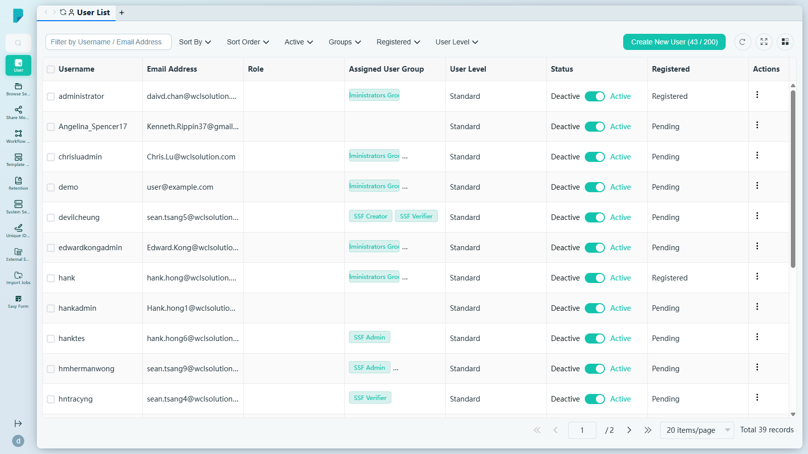
User List 畫面 此畫面的用途
這是系統中所有用戶帳號的中央登記冊。管理員可以在同一個畫面查看誰擁有存取權限、篩選及排序列表、建立新帳號、啟用或停用用戶、指派用戶群組，以及管理邀請。建立按鈕上的授權計數器（例如「43 / 200」）顯示已使用的用戶席位數與授權上限。
工具列與操作
Filter by Username / Email Address （按用戶名稱／電郵地址篩選）— 自由文字搜尋框；輸入後按 Enter 即可收窄列表範圍。Sort By （排序依據）— 核取方塊群組，用於選擇以哪一個（些）欄位排序：Username、Email Address、User Level、Status、Registered。
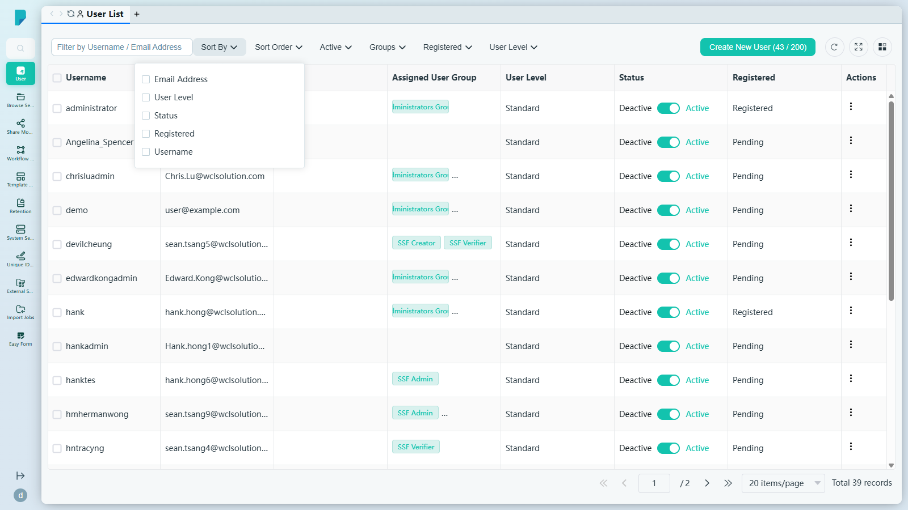
Sort By 選項
Sort Order （排序方式）— 核取方塊群組：A–Z 或 Z–A。Active — 按帳號狀態篩選：Active 或 Deactive。Groups （群組）— 按所屬用戶群組篩選（例如 Administrators Group、IT Team、Members Group、SSF Admin、SSF Creator、SSF Dashboard、SSF Exporter、SSF Verifier、Test Sales — 反映此網站上已定義的群組）。Registered （已註冊）— 按註冊狀態篩選：Pending 或 Registered。User Level （用戶級別）— 按級別篩選：Essential、Premium、Standard。Create New User (x / 200) （建立新用戶）— 開啟建立對話框；計數器顯示已使用席位數與 200 席授權上限。表格工具圖示：Refresh （重新整理）、Full screen （全螢幕）及 Column settings （欄位設定，顯示／隱藏欄位）。
分頁頁尾：跳至第一頁／上一頁／下一頁／最後一頁、頁碼輸入框、每頁項目數選擇器（預設每頁 20 項），以及總記錄數。
列表與欄位
每一列顯示一位用戶，包括：
Username （用戶名稱）— 登入名稱。Email Address （電郵地址）— 帳號電郵。Role （角色）— 已指派的角色（如有）。Assigned User Group （已指派用戶群組）— 用戶所屬的所有群組（可有多個值）。User Level （用戶級別）— Essential / Standard / Premium 級別。Status （狀態）— 內嵌的 Active/Deactive 切換開關及目前狀態標籤，管理員可直接在表格中啟用或暫停帳號。Registered （已註冊）— 用戶是否已完成註冊（Pending / Registered）。Actions （操作）— 每列的 ⋯ 選單。
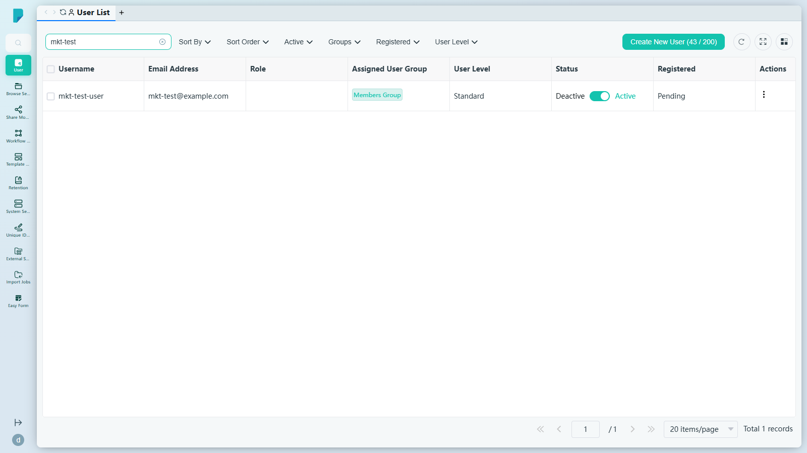
列表中已建立的新用戶 對話框與面板
Create New User
由工具列按鈕開啟。欄位包括：
Username （必填）— 必須以字母開頭；只可使用字母、數字、底線（_）及連字號（-）。First Name （必填）— 只可使用字母、數字、底線或中文字元。Last Name （必填）— 字元規則相同。Email Address （必填）。User Level — 下拉選單，預設為 Standard（Essential / Premium / Standard）。User Groups Assigned （已指派用戶群組）— 多選欄位；預先填入「Members Group」，標籤可以移除。Status — Activate 開關（預設為開啟）。Submit 會建立帳號；關閉（X）按鈕會取消操作。
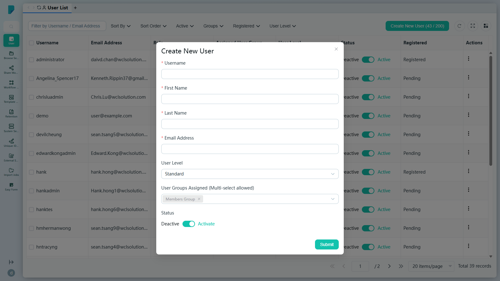
Create New User 對話框 列操作選單（⋯）
每位用戶的選單提供三項操作：
Edit User （編輯用戶）— 開啟用戶詳情面板（見下文）。Send Invitation （發送邀請）— 重新發送邀請電郵給該用戶。Delete User （刪除用戶）— 移除該帳號。
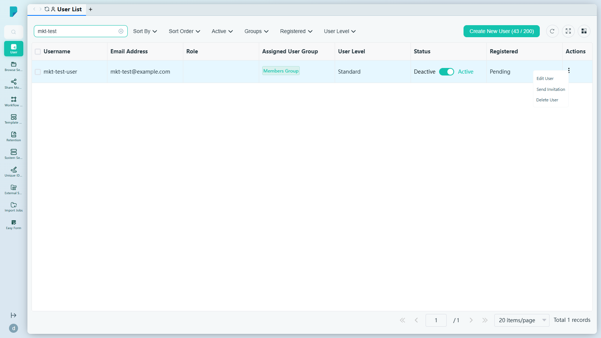
列操作選單 Edit User 面板
顯示所選用戶的詳情及群組成員資格：
User Info （用戶資料）— First Name、Last Name、Email Address、User Level，以及 Status（Active/Deactive）開關，均提供內嵌編輯功能；此處亦設有 Delete 按鈕。User Group Assignment （用戶群組指派）— 設有 Assign User Group 按鈕，以及一個可篩選的小型表格（User Group Name、User Group Identifier，附 Refresh / Full screen / Column settings），列出用戶所屬的所有群組，例如「Members Group (members)」。
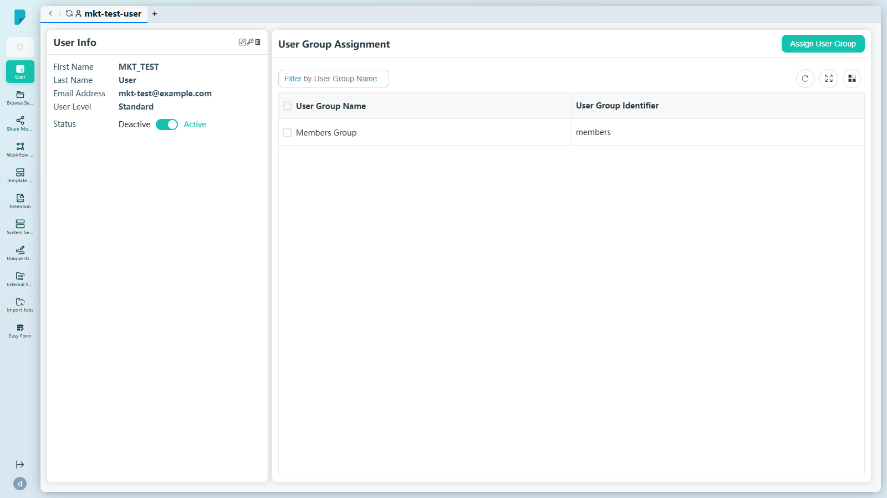
Edit User 面板 誰會使用
負責開設帳號、管理群組成員資格與用戶級別、啟用或暫停存取權限，以及追蹤授權席位使用情況的系統管理員與用戶管理員。
User Group List
Menu path: Admin → User → User Group List
User Group List 畫面 此畫面的用途
這是網站上所有用戶群組的登記冊。群組是 DocPal 中權限與指派的基本單位 — 它們會出現在用戶篩選、分享、工作流程及安全性設定中。管理員可在此建立新群組、重新命名或刪除群組，並管理每位用戶屬於哪些群組。
工具列與操作
Filter by User Group Name （按用戶群組名稱篩選）— 自由文字篩選框。Add New User Group （新增用戶群組）— 開啟建立對話框。表格工具圖示：Refresh 、Full screen 及 Column settings 。
列表與欄位
User Group Name （用戶群組名稱）— 群組的顯示名稱（例如 Administrators Group、Members Group、IT Team）。User Group Identifier （用戶群組識別碼）— 由名稱衍生而成的系統識別碼（例如 administrators、members、MKT-TEST_Group）。Actions （操作）— 每列的 ⋯ 選單，包括：
Edit （編輯）— 開啟群組詳情面板。Delete （刪除）— 移除該群組。
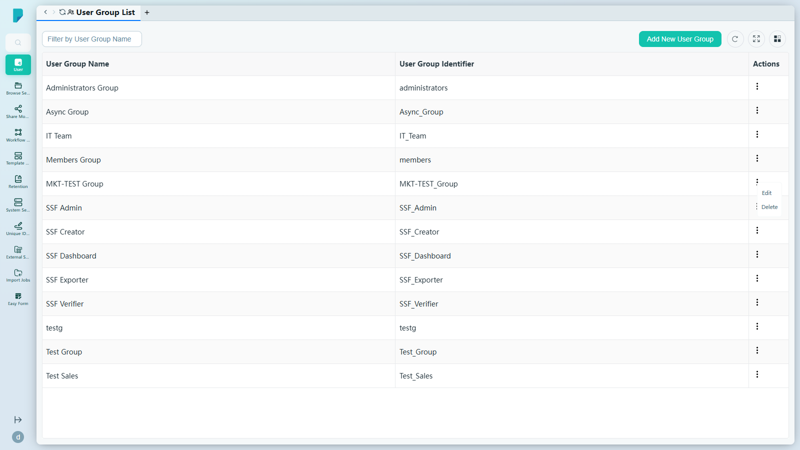
群組列操作 對話框與面板
Add New User Group
單一欄位的對話框：
User Group Name （必填）— 識別碼會由名稱自動產生。Submit 會建立群組；關閉（X）按鈕會取消操作。
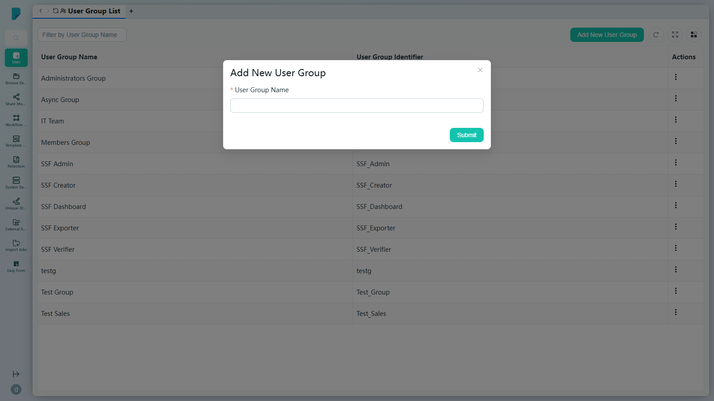
Add New User Group 對話框 群組詳情面板（Edit）
由該列的 Edit 操作開啟。頂部顯示群組名稱，下方的 Users 區段列出目前成員：
Add Users to User Group （新增用戶至群組）— 開啟成員選擇對話框。Filter By Name ，以及成員表格的 Refresh / Full screen / Column settings。成員表格欄位：Username 、Group Identifier 、Actions 。
每位成員列的 ⋯ 選單提供 Remove （將該用戶從群組移除）。
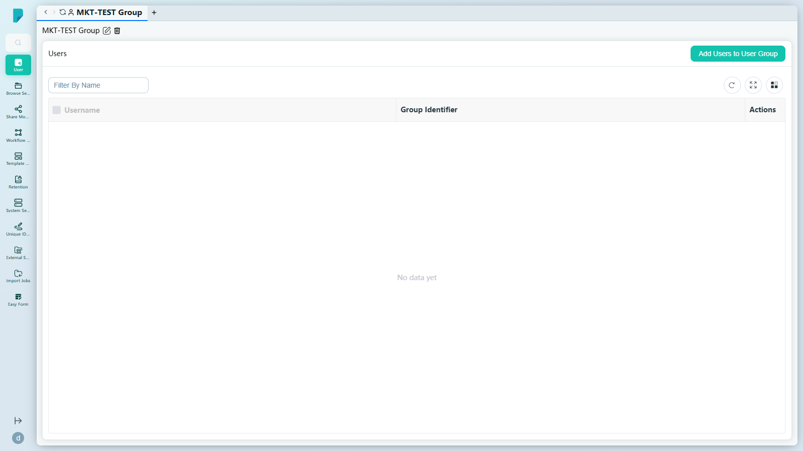
群組詳情面板 Add Users to User Group 對話框
Username （必填）— 可搜尋的多選欄位，涵蓋所有用戶（「Please select one or more users」）；已選用戶會以可移除的標籤顯示。Submit 會將所選用戶加入群組。
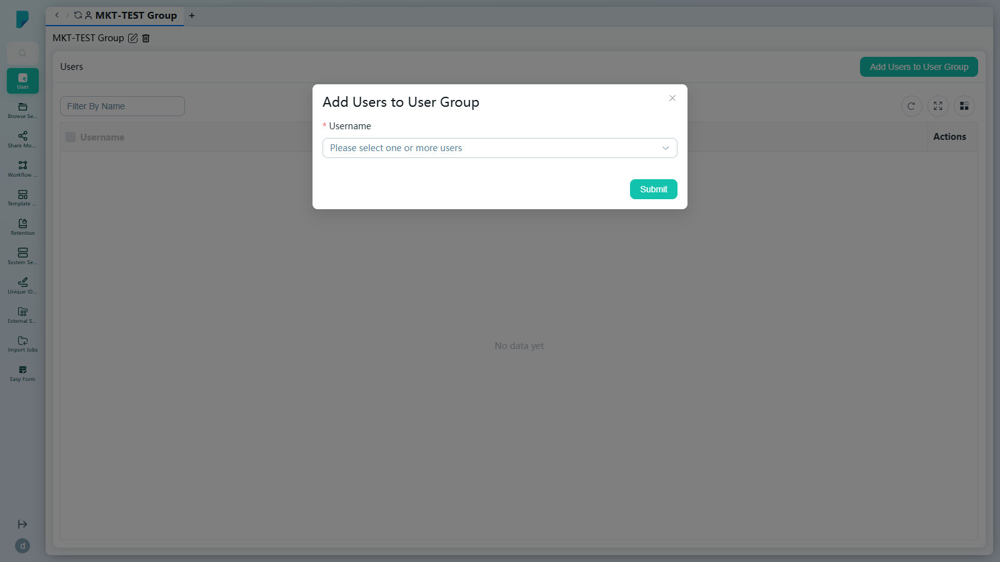
Add Users to User Group 對話框 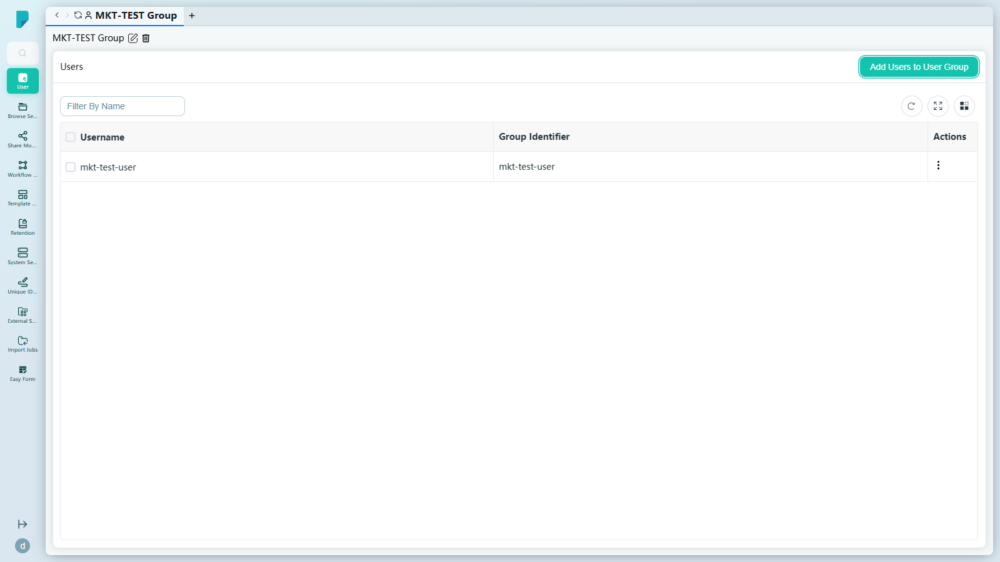
已加入一名成員的群組 誰會使用
負責將組織劃分為群組，以進行權限指派、分享範圍設定、工作流程路由及用戶篩選的系統管理員。
ROLE-Page
Menu path: Admin → User → ROLE-Page
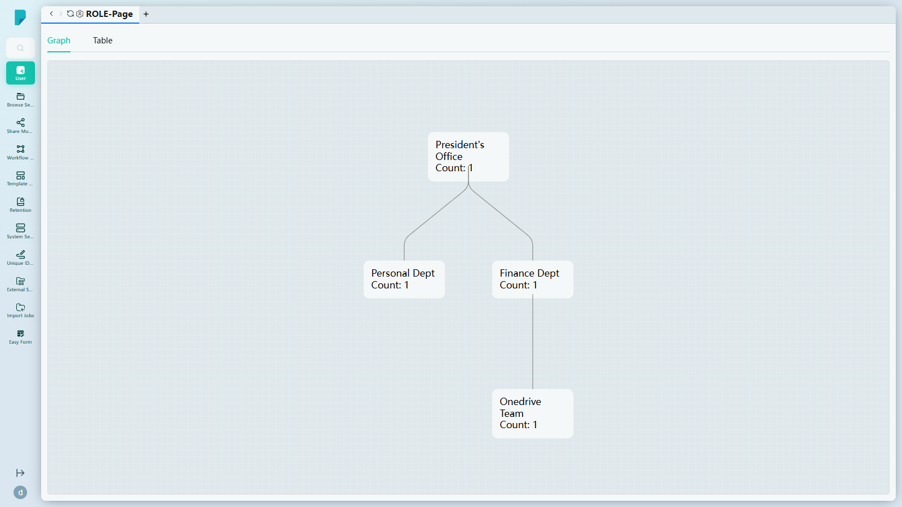
ROLE-Page 圖表檢視 此畫面的用途
這是角色階層的設定畫面。角色用於模擬組織架構（例如 President's Office → Personal Dept / Finance Dept → Onedrive Team），凡 DocPal 按角色路由或指派的地方都會用到。此頁面提供同一組資料的兩種檢視方式：視覺化的階層 Graph （圖表），以及用於管理的 Table （表格）。
工具列與操作
Graph / Table 分頁 — 在視覺化階層圖與列表檢視之間切換。在 Table 檢視中：
Filter By Name （按名稱篩選）— 自由文字篩選。Status — 按 Active / Deactive 篩選（徽章會顯示已啟用的篩選值數目）。Parent Role （上層角色）— 按任何現有角色篩選（例如 President's Office、Personal Dept、Finance Dept、Onedrive Team）。Sort By — Name、Last Modified、Parent Role、Status。Sort Order — A–Z / Z–A。Add — 開啟 Add Role 對話框。Refresh、Full screen 及 Column settings 圖示，另設附總記錄數的分頁頁尾。
列表與欄位
Graph 檢視
以組織架構圖形式呈現的圖表，置於網格畫布上。每個角色是一張節點卡片，顯示角色名稱及成員 Count （數目）（例如「President's Office — Count: 1」）；連接線顯示上下層階層關係。
Table 檢視
Role Label （角色標籤）— 角色名稱（例如 Finance Dept、Personal Dept）。Parent Role （上層角色）— 該角色所隸屬的上層角色（例如 President's Office）。Status — Active / Deactive。Last Modified （最後修改）— 最後一次變更的時間戳記。Actions — 每列的操作選單。
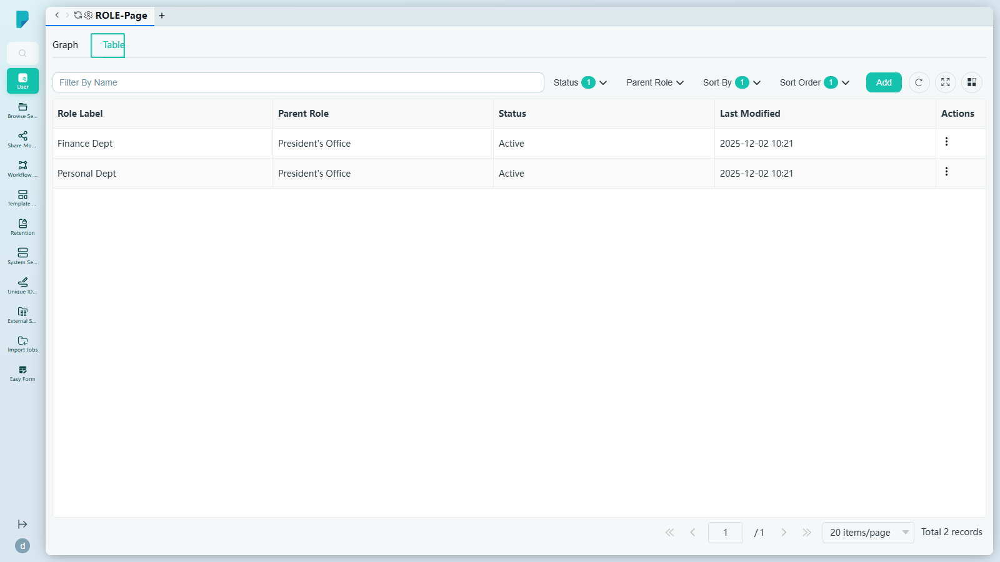
ROLE-Page 表格檢視 對話框與面板
Add Role
由 Table 檢視中的 Add 按鈕開啟：
Role Label （必填）— 自由文字的角色名稱。Parent Role — 下拉選單，用於將角色置於某個現有角色之下（「Please enter parent role」）。Cancel 及 Save 按鈕，另設關閉（X）按鈕。
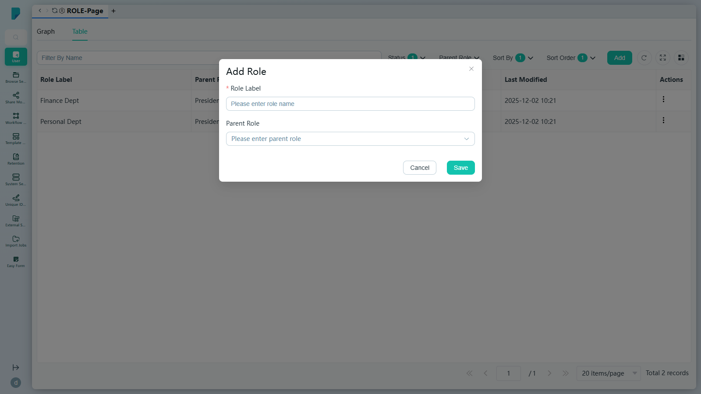
Add Role 對話框 > 在此網站觀察到的已知問題： 在 Role Label 有效且未選擇上層角色的情況下按 Save，POST /admin/api/docpal/acl/role 回傳 HTTP 500（「Internal server error, please contact administrator」），對話框維持開啟，角色並未建立。
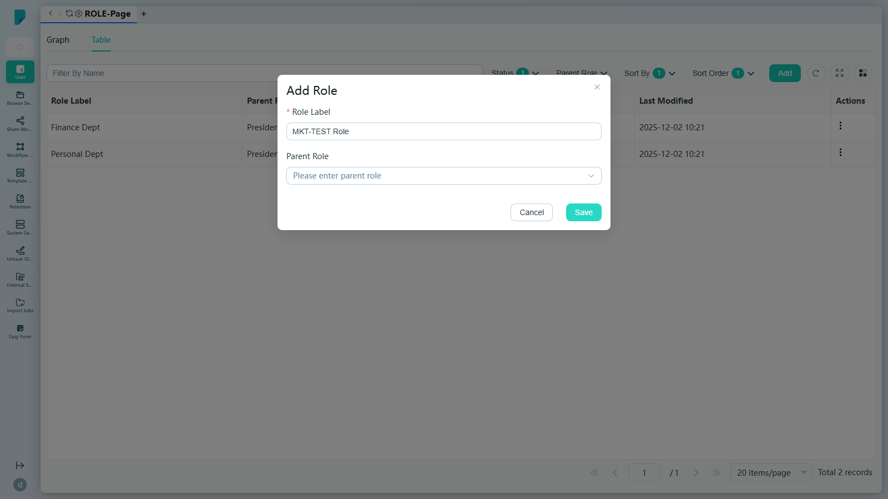
Add Role 500 錯誤 誰會使用
負責定義及維護角色階層的系統管理員，此階層用於整個平台的角色式路由、指派及權限管理。
User Profile
Menu path: Admin → User → User Profile
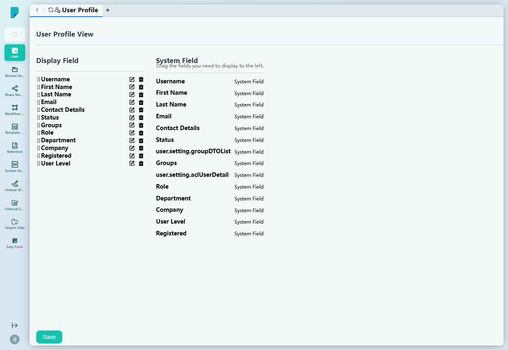
User Profile 設定畫面 此畫面的用途
此畫面用於設定用戶個人檔案（「User Profile View」）上顯示哪些欄位。管理員可決定顯示哪些資料及其排列次序 — 方法是將系統欄位拖曳至顯示列表、重新命名欄位標籤，以及移除需要隱藏的欄位。
工具列與操作
Save （頁面底部）— 儲存目前的顯示欄位設定。Display Field 列表中每個欄位的控制項：
拖曳手柄（⋮⋮） — 以拖曳方式重新排列欄位。Edit（鉛筆圖示） — 開啟該欄位的 Edit Field 對話框。Delete（垃圾桶圖示） — 將該欄位從顯示列表中移除。
列表與欄位
Display Field（左面板）
目前顯示於用戶個人檔案上的欄位，按顯示次序排列。此網站已啟用全部十二個欄位：
Username
First Name
Last Name
Email
Contact Details
Status
Groups
Role
Department
Company
Registered
User Level
System Field（右面板）
可用欄位的資源池，每個欄位均標示為「System Field」，並附提示「Drag the fields you need to display to the left.」。資源池與顯示列表對應，同時亦顯示原始的內部綁定（例如 user.setting.groupDTOList、user.setting.aclUserDetail）：Username、First Name、Last Name、Email、Contact Details、Status、Groups、Role、Department、Company、User Level、Registered。
對話框與面板
Edit Field
由顯示欄位的鉛筆圖示開啟：
Label — 文字輸入框，預先填入欄位的目前標籤（例如「Username」）；可重新命名欄位在個人檔案上的顯示名稱。Cancel 及 Save 按鈕，另設關閉（X）按鈕。
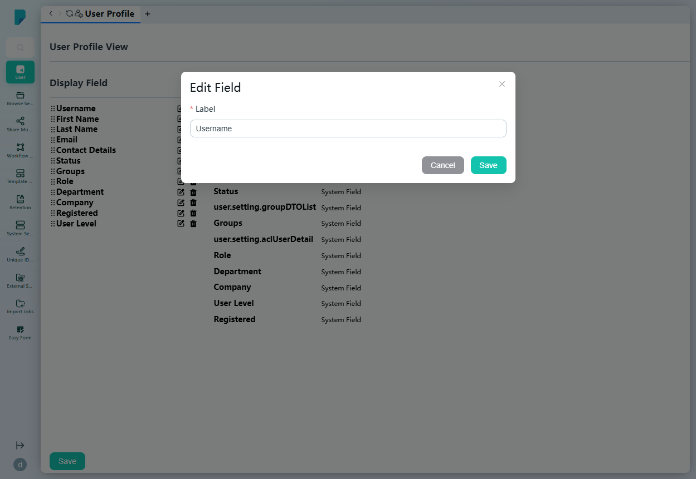
Edit Field 對話框 誰會使用
負責按組織需要度身訂造用戶個人檔案版面的系統管理員 — 顯示用戶需要的欄位（部門、公司、聯絡資料），並隱藏其餘欄位。
My Setting
Menu path: Admin → User → My Setting
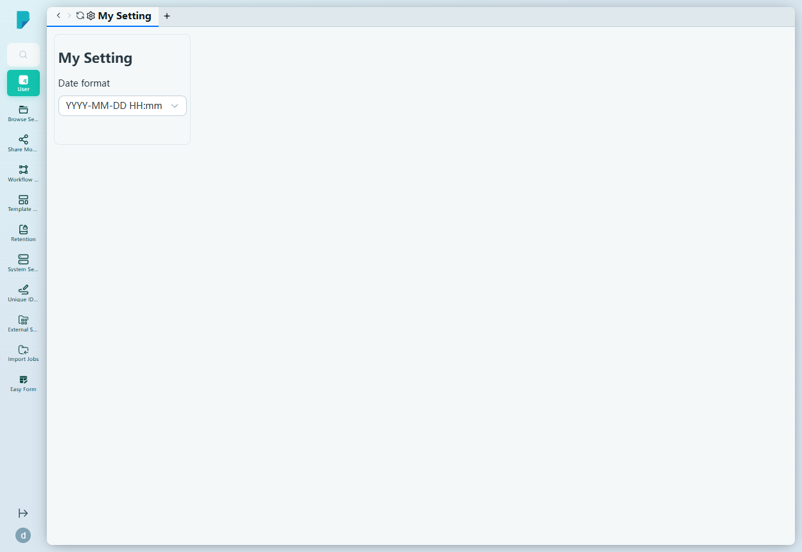
My Setting 畫面 此畫面的用途
這是管理員在管理主控台的個人喜好設定 — 只套用於目前登入的帳號，不影響整個網站。
工具列與操作
此頁面是一個只有一項喜好設定的小型表單：
Date format （日期格式）— 下拉選單，選擇此用戶的日期顯示方式。選項：
YYYY-MM-DDYYYY/MM/DDMM/DD/YYYYDD/MM/YYYYYYYY-MM-DD HH:mm（目前選擇）
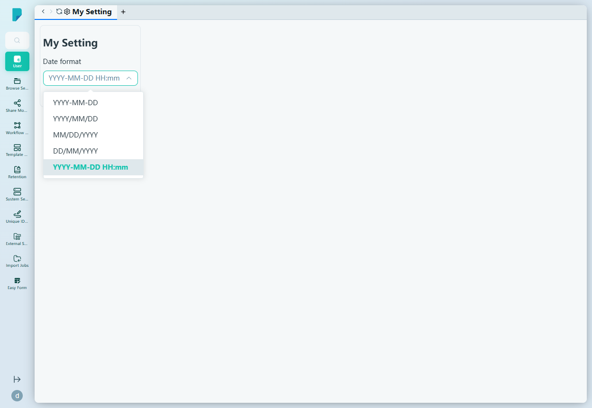
Date format 選項 列表與欄位
沒有列表 — 此頁面只包含上述的喜好設定表單。
對話框與面板
頭像選單（側欄底部）
管理側欄左下角的圓形頭像按鈕（示範帳號顯示「d」）會開啟帳號選單：
My Setting — 跳轉至此頁面。ENG — 將介面切換為英文。简体中文 — 將介面切換為簡體中文。繁體中文 — 將介面切換為繁體中文。Switch to Client — 離開管理主控台，開啟客戶端（一般用戶）網站。Log Out — 登出目前的工作階段。
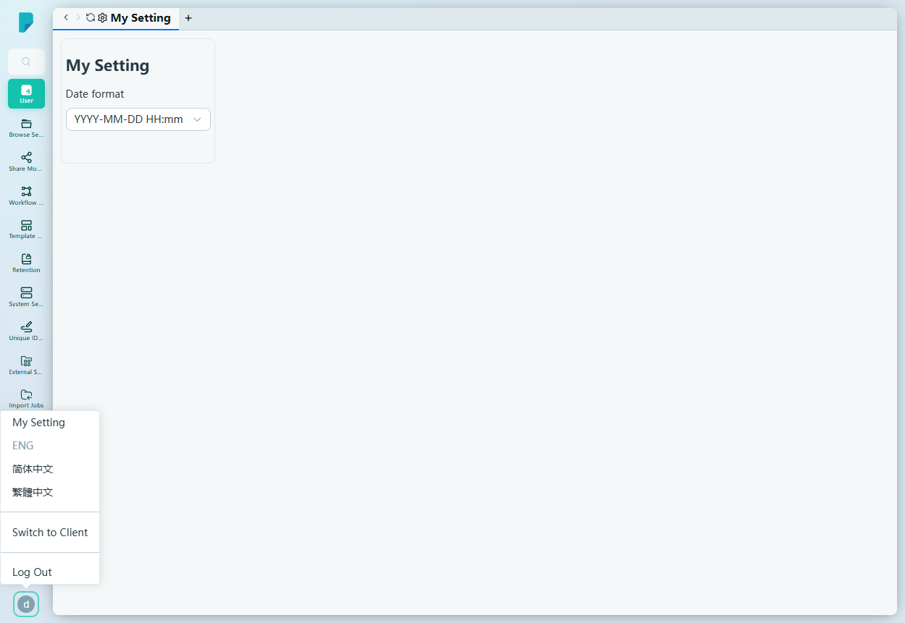
管理員頭像選單 誰會使用
每位管理員 — 各自設定自己的日期顯示喜好，並使用頭像選單切換語言、轉換使用環境及登出。
Company Profile
Menu path: Admin → User → Company Profile
Company Profile 畫面 此畫面的用途
公司檔案（Company Profile）的登記冊——用戶可以關聯的機構（即用戶檔案中所見的「Company」欄位）。管理員可在此建立、編輯、啟用／停用及移除公司檔案。
工具列與操作
Filter by company profile （按公司檔案篩選）——自由文字篩選框。Sort By （排序方式）——複選框群組：Company Profile、Create Date、Status、Last Modified Date。Sort Order （排序次序）——A–Z 或 Z–A。New Profile ——開啟建立對話框。表格工具圖示：Refresh 、Full screen 、Column settings ，以及顯示總記錄數的分頁頁尾。
列表與欄位
Company Profile ——公司名稱（例如 Raynor LLC、NS、WCL）。Creator ——建立該檔案的帳戶（例如 administrator、joshua）。Create Date ——建立時間戳記。Last Modified Date ——最後修改時間戳記。Status ——Active 或 Deactive。Actions ——每列的 ⋯ 選單，包括：
Edit ——編輯該檔案。Deactive ——停用該檔案。Remove ——刪除該檔案。
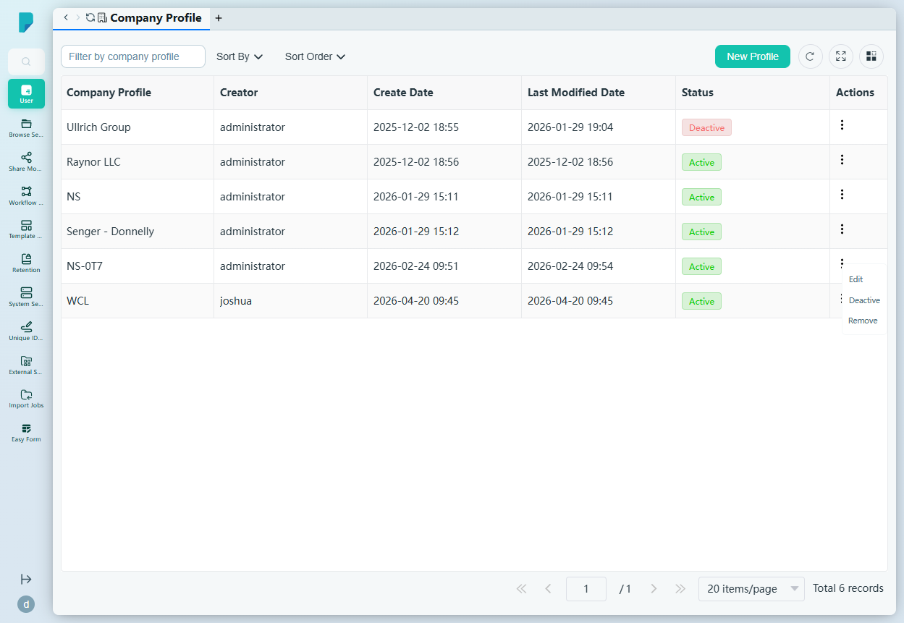
公司檔案列操作選單 對話框與面板
New Profile
由 New Profile 按鈕開啟。欄位：
Company Profile （必填）——公司名稱。Phone ——選填。Website ——選填。Fax ——選填。Email ——選填。Address ——選填的多行文字。Status ——Active 開關（預設為開啟）。Submit 建立檔案；關閉（X）按鈕則取消。
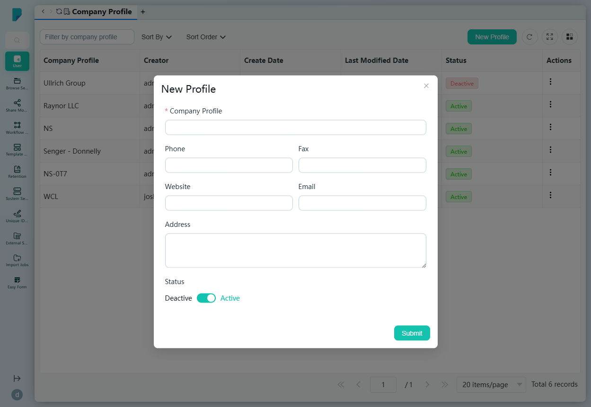
New Profile 對話框 誰會使用
負責維護公司清單的系統管理員——平台上用戶帳戶所連結的公司皆由此管理。
Contact Book
Menu path: Admin → User → Contact Book
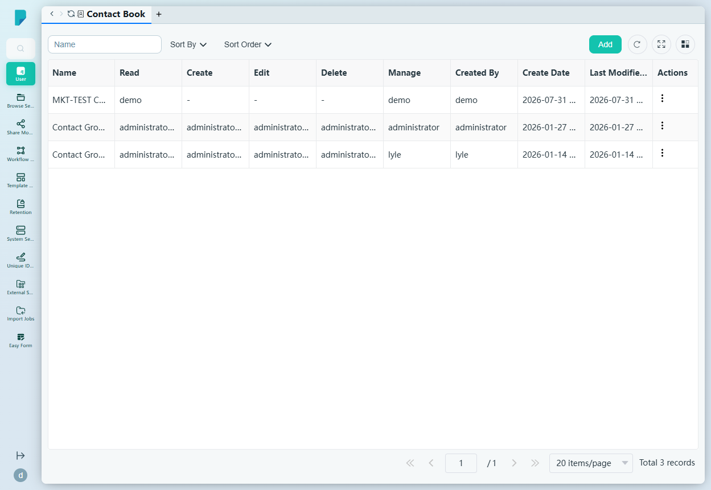
Contact Book 畫面 此畫面的用途
集中管理網站上的所有通訊錄（Contact Book）。每個通訊錄都是一本共用的地址簿，擁有專屬的欄位組合及細緻的權限設定——管理員可以查看誰獲准讀取、建立、編輯、刪除及管理每本通訊錄，並可開啟任何通訊錄以管理當中的聯絡人。
工具列與操作
Name ——自由文字篩選框。Sort By ——複選框群組：Name、Created By、Create Date、Last Modified Date。Sort Order ——A–Z 或 Z–A。Add ——開啟 New Contact Book 對話框。表格工具圖示：Refresh 、Full screen 、Column settings ，以及顯示總記錄數的分頁頁尾。
列表與欄位
每列代表一本通訊錄：
Name ——通訊錄名稱（例如 MKT-TEST Contact Book、Contact Group Bacon）。Read / Create / Edit / Delete / Manage ——五個權限欄，各自列出獲授該權限的用戶及用戶群組（以逗號分隔；沒有時顯示「-」）。Created By ——建立該通訊錄的帳戶。Create Date / Last Modified Date ——時間戳記。Actions ——每列的 ⋯ 選單，包括 Edit （開啟該通訊錄，見下文）及 Remove （刪除該通訊錄）。
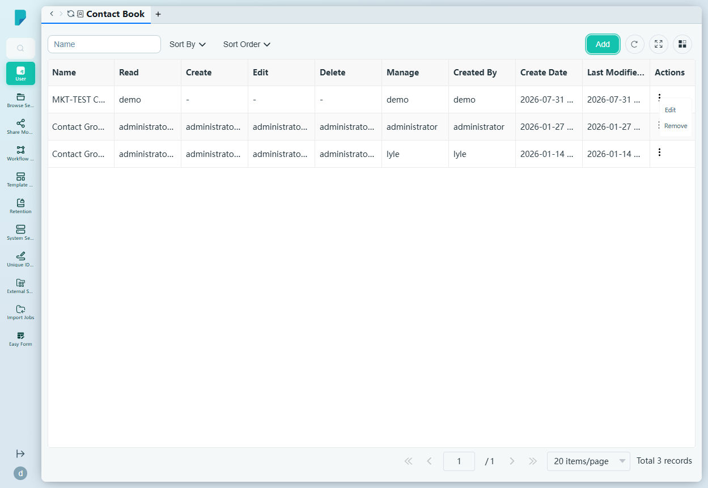
通訊錄列操作選單 對話框與面板
New Contact Book
由 Add 按鈕開啟：
Name （必填）——通訊錄名稱。Permission ——五個用戶／群組選擇下拉框：Read 、Create 、Edit 、Delete 、Manage （顯示「Select an option」；選擇器列出所有用戶及群組）。Fields 區段——通訊錄所儲存的聯絡人欄位；預設包含 Name 及 Email ，可按 Add Field 新增更多欄位。Submit 建立通訊錄；關閉（X）按鈕則取消。
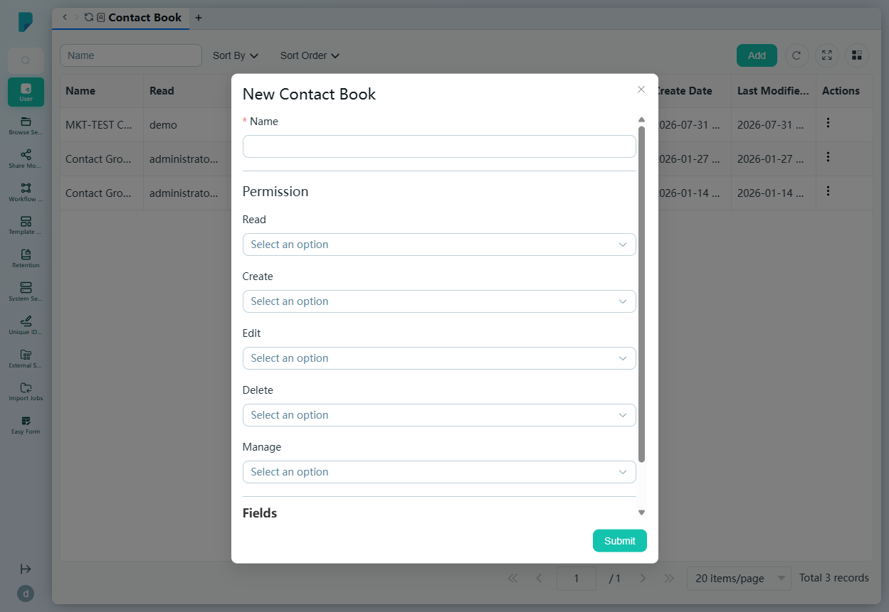
New Contact Book 對話框 Contact book edit view（通訊錄編輯檢視）
由某列的 Edit 操作開啟。在同一畫面結合通訊錄的設定與內容：
Name （必填）及五個 Permission 選擇器，已預填現有授權（以可移除的標籤顯示）。Fields 區段，附 Add Field 。聯絡人表格，附專屬工具列——Name 篩選、Sort By 、Sort Order 、Export Data （Export Excel / Export CSV / Export vCard (VCF)）、Import Data 、Add （新增聯絡人），以及 Refresh / Full screen / Column settings。
聯絡人欄位：Email （必填）、Name （必填）、Created By 、Create Date 、Last Modified Date 、Actions 。
範例：MKT-TEST Contact Book 包含一個聯絡人——「MKT-TEST Contact」（mkt-test@example.com），由 demo 建立。
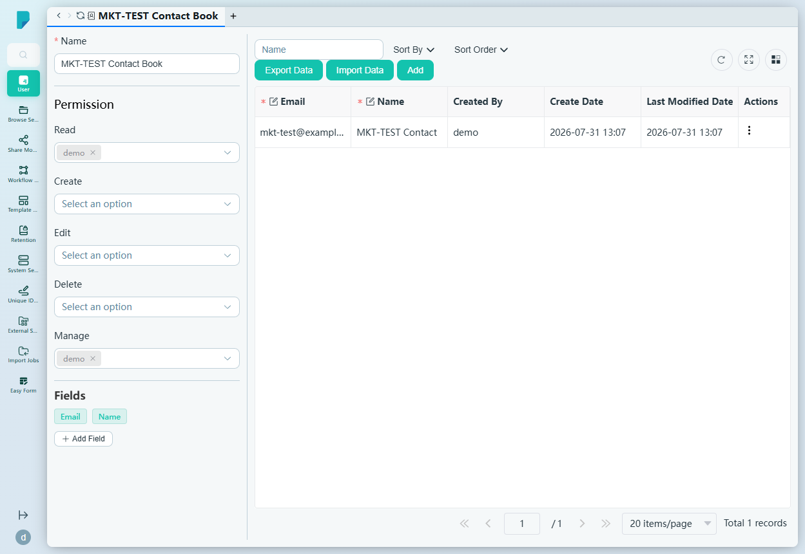
通訊錄編輯檢視 誰會使用
負責管理共用通訊錄的系統管理員——管理其欄位、內容，以及哪些用戶和群組可以讀取、貢獻或管理每本通訊錄。
Smart Folder Setting
Menu path: Admin → Browse Setting → Smart Folder Setting
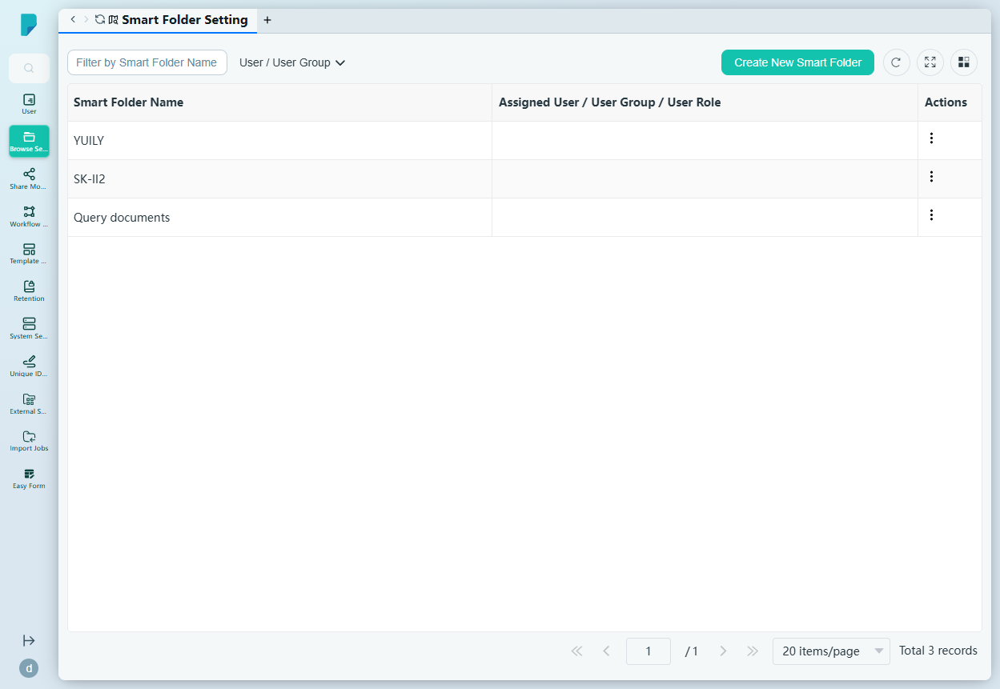
Smart Folder Setting 畫面 此畫面的用途
智能資料夾（Smart Folder）是已儲存的搜尋查詢，對最終用戶顯示為虛擬資料夾。管理員在此畫面建立智能資料夾、定義每個資料夾背後的查詢，並控制哪些用戶、群組或角色可以看到它們。
工具列與操作
Filter by Smart Folder Name （按智能資料夾名稱篩選）——自由文字篩選框。User / User Group ——按指派對象篩選列表（複選框群組；本網站上有：Members Group、administrator、Administrators Group）。Create New Smart Folder ——開啟建立對話框。表格工具圖示：Refresh 、Full screen 、Column settings ，以及顯示總記錄數的分頁頁尾。
列表與欄位
Smart Folder Name ——資料夾名稱（例如 YUILY、SK-II2、Query documents）。Assigned User / User Group / User Role ——該智能資料夾對誰可見。Actions ——每列的 ⋯ 選單，包括：
Edit Smart Folder Query ——開啟查詢編輯器（見下文）。Edit Smart Folder Info ——編輯名稱及指派對象。Delete Smart Folder ——移除該智能資料夾。
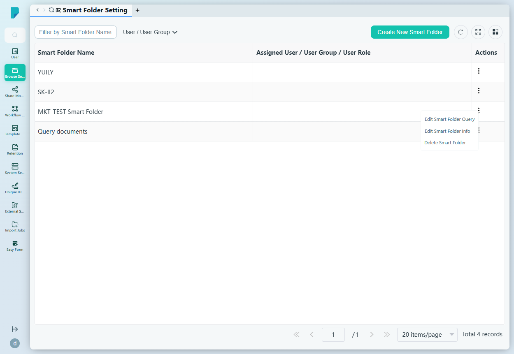
智能資料夾列操作選單 對話框與面板
Create New Smart Folder
Smart Folder Name （必填）。User / User Group （必填）——用戶及群組的多選欄位，預填「Members Group」（可移除的標籤）。Submit 建立資料夾；關閉（X）按鈕則取消。
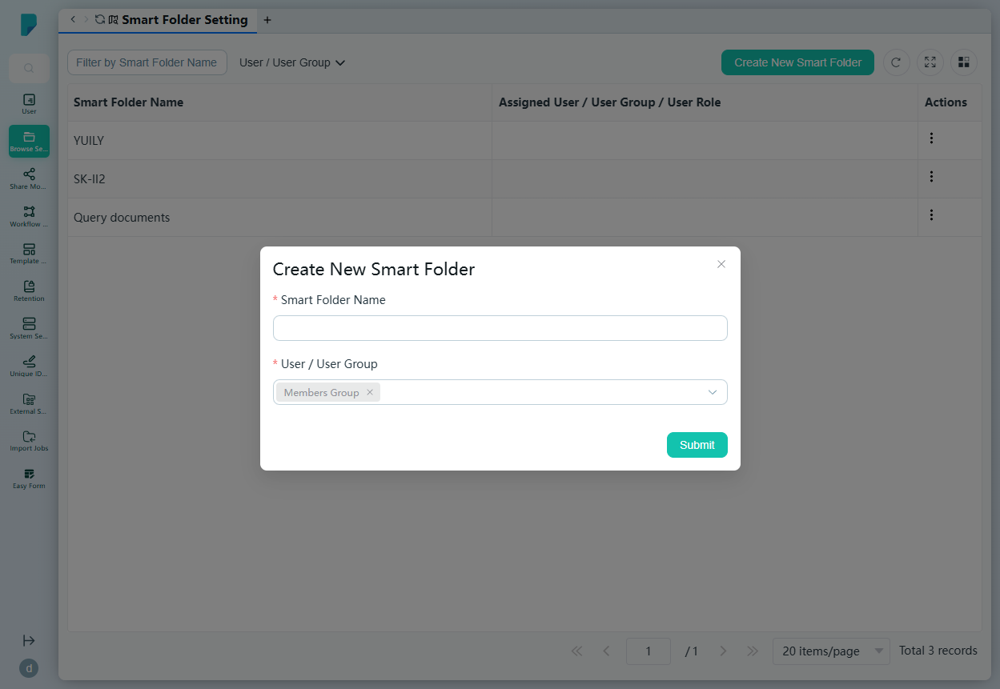
Create New Smart Folder 對話框 Edit Smart Folder Query
智能資料夾的完整查詢建構畫面：
Condition Type ——可搜尋屬性的下拉框：Author groups、Authors、Collections、Create Date、Created By、Creator groups、Document Type、File Size、File Type、Keyword、Last Modified Date、Metadata。條件的數值輸入框（例如 Keyword 文字框），以及關鍵字條件專用的 Synonyms （同義詞）開關。
And 按鈕，附 Toggle Dropdown 提供 And / Or 選項——以布林邏輯組合多個條件。Clear Filter 、Test （執行查詢）及 Save 。Search Result 表格顯示符合條件的文件，欄位包括：File / Folder Name、Document Type、File Type、Created By、Authors、File Size、File / Folder Path、Summary、Create Date、Last Modified Date、Tags。
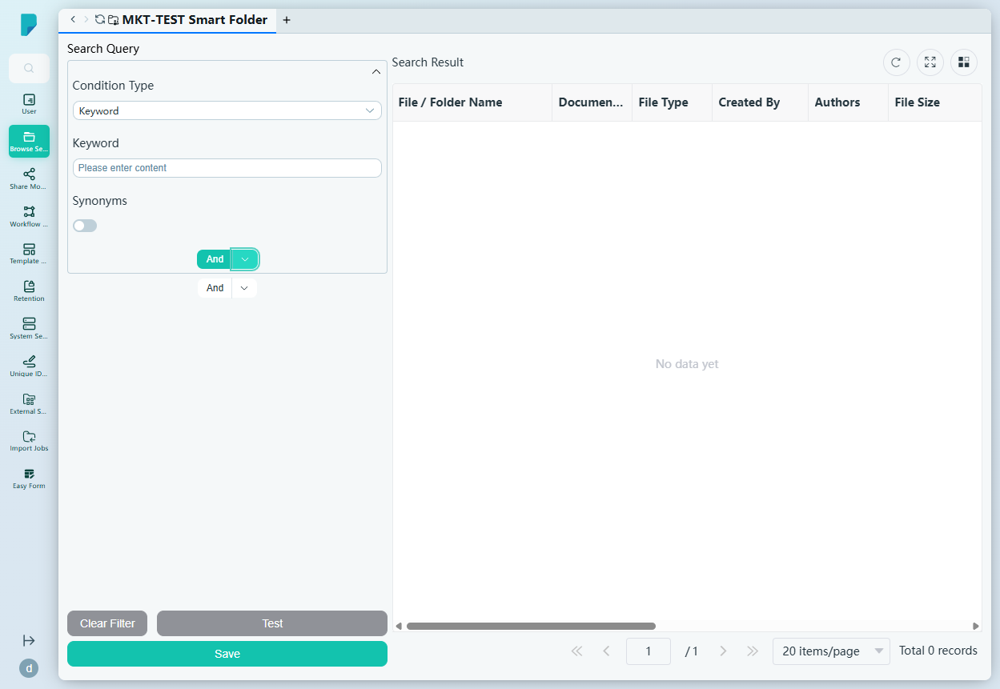
智能資料夾查詢編輯器 誰會使用
系統管理員及知識管理員——他們將經常使用的搜尋包裝成現成的虛擬資料夾供團隊使用（例如「本月修改過的所有合約」），並指派給合適的對象。
Document Type Setting
Menu path: Admin → Browse Setting → Document Type Setting
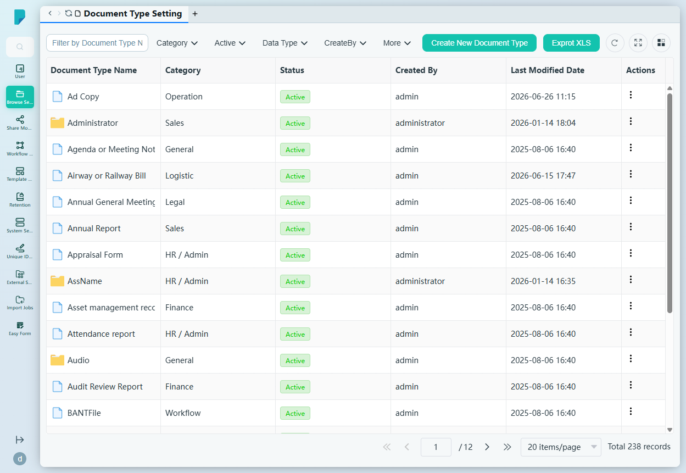
Document Type Setting 畫面 此畫面的用途
系統中所有文件類型（Document Type）的登記冊（本網站共 238 個）。文件類型定義了一類檔案或資料夾——其所屬類別、誰可以使用，以及該類型文件所附帶的中繼資料欄位。管理員可在此建立、複製、停用及豐富文件類型。
工具列與操作
Filter by Document Type Name （按文件類型名稱篩選）——自由文字篩選框。Category ——按類別篩選：HR / Admin、Sales、Finance、Legal、IT、Marketing、Project、Operation、Customer Service、General、Logistic、CRM、Workflow（另有 intranet）。Active ——按 Enable / Disable 篩選。Data Type ——按 File / Folder 篩選。CreateBy ——按建立者篩選（admin、administrator）。More ——顯示額外的排序／篩選控制項（Sort By、Sort Order），以及在篩選生效時顯示 Clear Filter 按鈕。Create New Document Type ——開啟建立對話框。Exprot XLS ［原文如此］——將文件類型清單匯出至 Excel。表格工具圖示：Refresh 、Full screen 、Column settings ，以及分頁頁尾（每頁 20 項；此處共 12 頁）。
列表與欄位
Document Type Name ——類型名稱。Category ——其業務類別（例如 Finance、Workflow）。Status ——Active / inactive。Created By ——建立者帳戶。Last Modified Date ——最後修改時間戳記。Actions ——每列的 ⋯ 選單，包括：
Edit Display Meta ——開啟該類型的詳細資料／中繼資料畫面（見下文）。Duplicate Document Type ——複製該類型。Inactivate Document Type ——停用該類型。
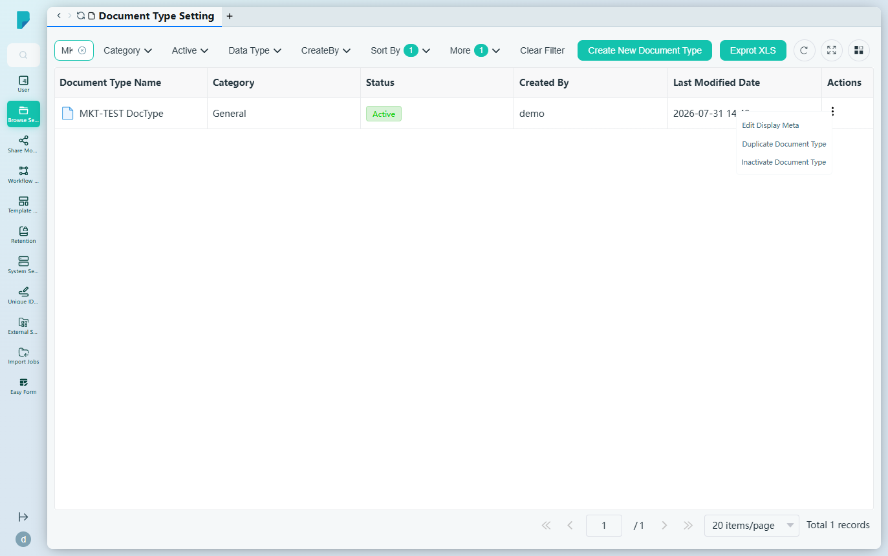
文件類型列操作選單 對話框與面板
Create New Document Type
Document Type Name （必填）。Category （必填）——上述 13 個類別的下拉框。Is Folder ——開關；令該類型套用於資料夾而非檔案。Permission ——按 Users 、Role 及 Assigned User Group 分組的多選欄位：誰可以使用該類型。Submit 建立類型；關閉（X）按鈕則取消。
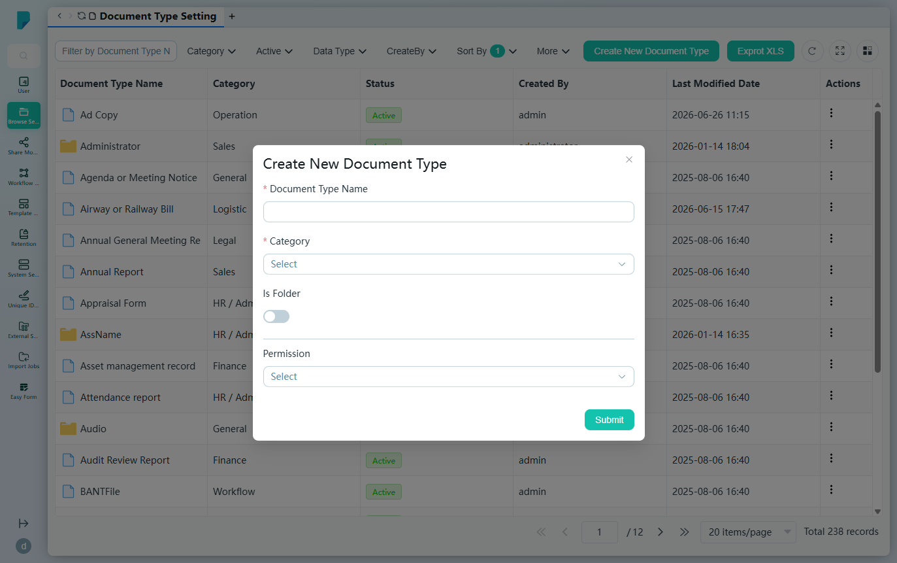
Create New Document Type 對話框 Document type detail (Edit Display Meta)（文件類型詳細資料）
顯示類型的三語名稱（ENG / 简体中文 / 繁體中文 輸入框）及 Category ，並附 Display Meta 分頁，列出附於該類型的中繼資料欄位：
Filter by Meta 篩選框及 Add New Display Meta 按鈕。欄位：No. 、Meta 、Data Type 、Last Modified 、Actions 。
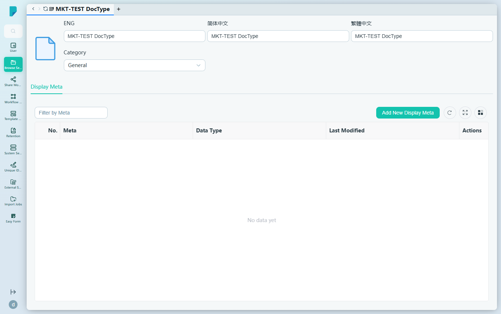
文件類型 Display Meta 分頁 Add New Display Meta
將中繼資料欄位關聯至文件類型：
Meta （必填）——Metadata 登記冊中所有中繼資料定義的下拉框。Display ——Yes/No 開關（預設為開啟）。Hidden ——附 Add Rule 的區段（設定欄位於何時隱藏的規則）。Mask ——附 Add Rule 的區段（設定遮蔽欄位數值的規則）。Read only ——附 Add Rule 的區段（設定令欄位變為唯讀的規則）。Language Set ——ENG / 简体中文 / 繁體中文 顯示標籤輸入框。Submit 及 Submit And Add More 按鈕。
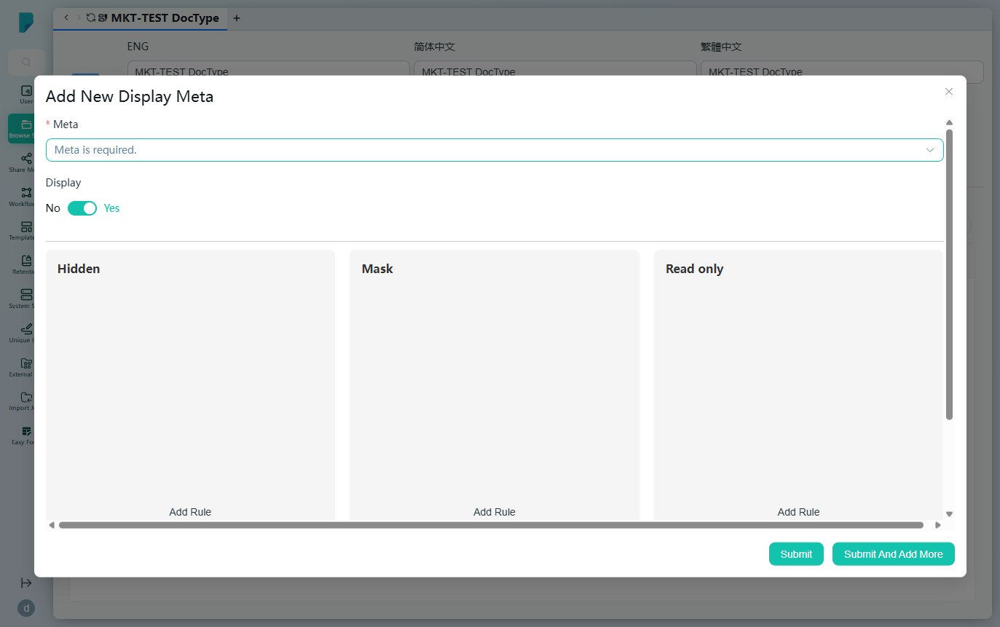
Add New Display Meta 對話框 誰會使用
系統管理員及資訊架構師——他們為機構建立文件分類體系，控制有哪些類型存在、誰可以將文件歸入各類型，以及每個類型收集哪些中繼資料。
Metadata
Menu path: Admin → Browse Setting → Metadata
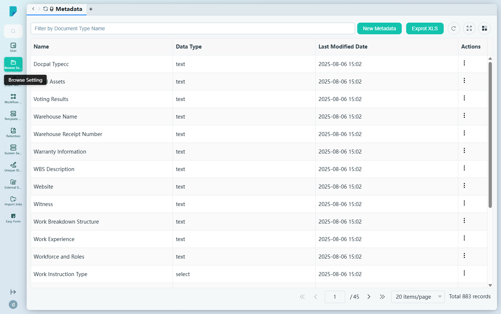
Metadata 登記冊畫面 此畫面的用途
系統中所有中繼資料（Metadata）欄位的主登記冊（本網站共 883 個定義）。每個定義——其名稱、資料類型及驗證／遮蔽規則——皆可透過 Display Meta 設定附加到文件類型，令文件能擷取一致而結構化的資訊。
工具列與操作
Filter by Document Type Name ——自由文字篩選框（按名稱篩選中繼資料列表）。New Metadata ——開啟建立對話框。Exprot XLS ［原文如此］——將登記冊匯出至 Excel；檔案在瀏覽器中產生，並下載為 metadata.xlsx（觀察所得為約 24 KB 的 .xlsx 活頁簿）。表格工具圖示：Refresh 、Full screen 、Column settings ，以及分頁頁尾（每頁 20 項；此處共 45 頁）。
列表與欄位
Name ——中繼資料欄位名稱（例如 Contract ID、Approve Date、Work Instruction Type）。Data Type ——欄位類型（例如 text、select、date）。Last Modified Date ——最後修改時間戳記。Actions ——每列的 ⋯ 選單，包括 Edit 、Duplicate 及 Remove 。
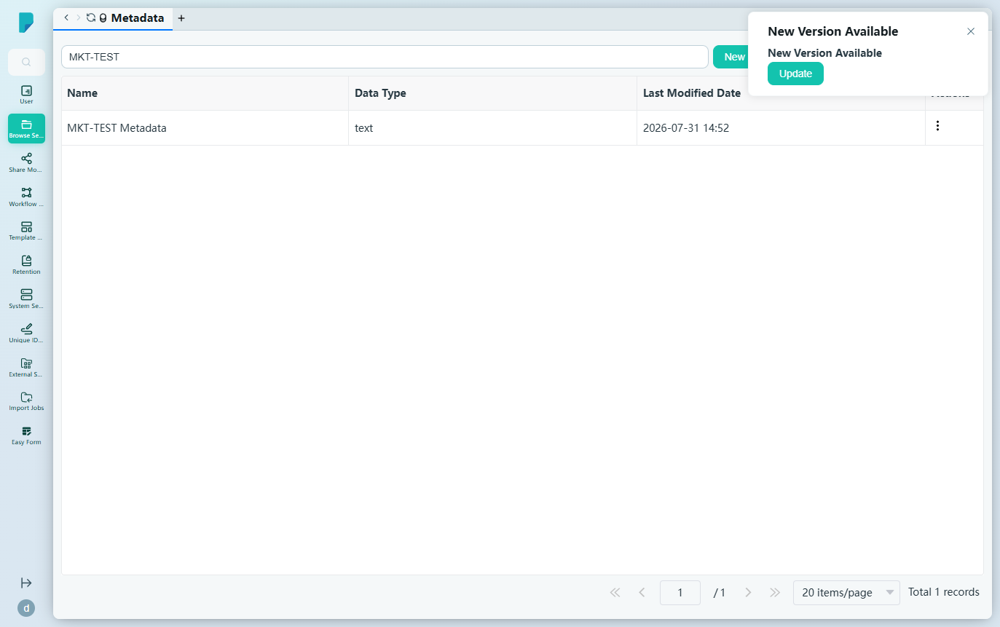
中繼資料列操作選單 對話框與面板
New Metadata
Name （必填）——欄位名稱。Data Type （必填）——包含 11 種類型的下拉框：Text、Number、Boolean、Select、Date、Document、Case、Workflow、MasterTable、User、UserRoleUserGroup。視乎類型顯示相應選項：
Text ——*Max Length* 微調輸入框（1–4000，預設 255）。Select ——Options 區段，附 Add Option 以定義選項，另設 Multiple 開關以允許多選。
Mask Setting ——*Mask type* 下拉框（預設 MASK_ALL）及 *Mask Length* 微調輸入框（1–24，預設 10），控制數值顯示時的遮蔽方式。Submit 建立定義；關閉（X）按鈕則取消。
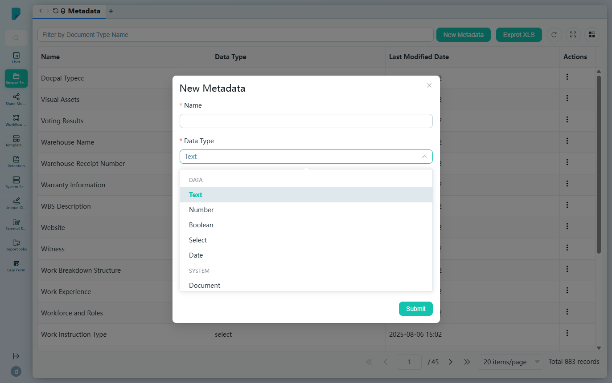
New Metadata 對話框 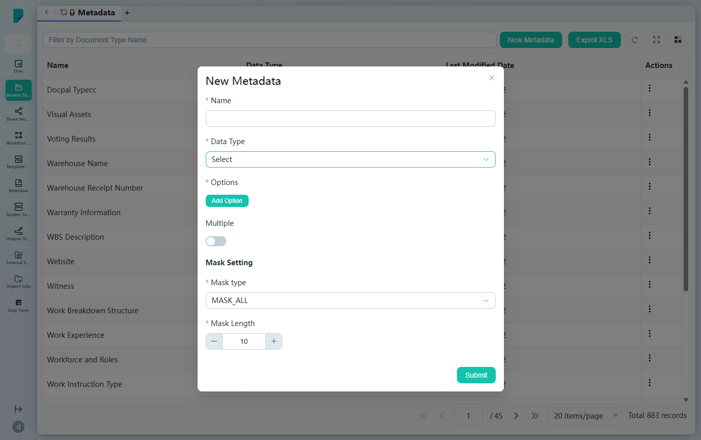
Select 資料類型選項 誰會使用
系統管理員及資訊架構師——他們一次定義機構的中繼資料詞彙，並在文件類型、搜尋及智能資料夾中重複使用。
Folder Cabinet Setting
Menu path: Admin → Browse Setting → Folder Cabinet Setting
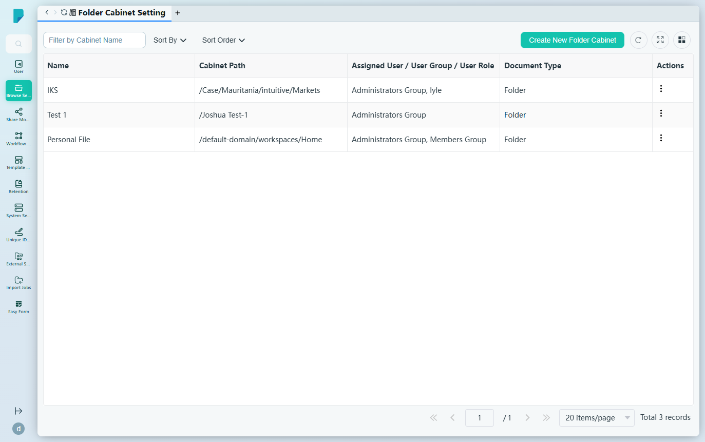
Folder Cabinet Setting 畫面 此畫面的用途
Folder cabinet（檔案櫃）是進入儲存庫的精選入口：每個檔案櫃會釘選一個儲存庫路徑，並以「檔案櫃」的形式呈現給客戶端上指定的用戶、群組或角色。管理員在此畫面建立檔案櫃、將其指向儲存庫路徑，並控制其可見對象。
工具列與操作
Filter by Cabinet Name — 自由文字篩選框。Sort By — 核取方塊群組：Cabinet Path、Document Type、Name。Sort Order — A–Z 或 Z–A。Create New Folder Cabinet — 開啟建立對話框。表格工具圖示：Refresh 、Full screen 、Column settings ，另設顯示總記錄數的分頁頁尾。
列表與欄位
Name — 檔案櫃的顯示名稱（此網站上為：IKS、Test 1、Personal File）。Cabinet Path — 檔案櫃所指向的儲存庫路徑（例如 /default-domain/workspaces/Home）。Assigned User / User Group / User Role — 可看到此檔案櫃的對象（例如 Administrators Group、Members Group、lyle）。Document Type — 檔案櫃的類型（目前所有列均為 Folder）。Actions — 每列的 ⋯ 選單，包括：
Edit Folder Cabinet — 編輯名稱、路徑及指派對象。Config Folder Cabinet — 開啟同一個編輯對話框以設定檔案櫃的配置。Delete Folder Cabinet — 移除檔案櫃。
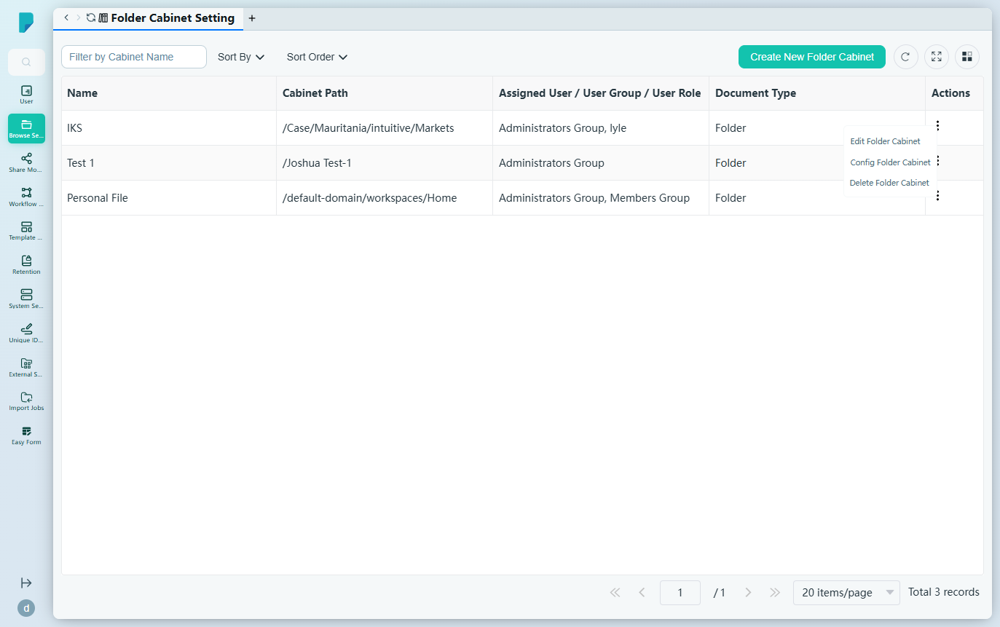
檔案櫃列操作選單 對話框與面板
Create New Folder Cabinet / Edit Folder Cabinet
Name （必填）— 檔案櫃的顯示名稱。Cabinet Path （必填）— 儲存庫路徑（以麵包屑形式顯示，例如「default-domain / workspaces / Home」）。User / User Group / User Role （必填）— 用戶、群組及角色的多選欄位；目前的指派會以可移除的標籤顯示。Submit 儲存；關閉（X）按鈕取消。
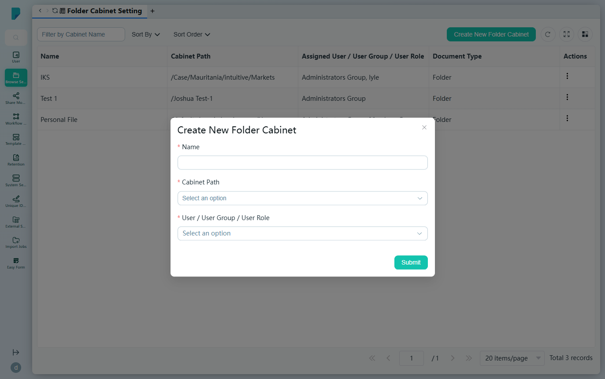
Create New Folder Cabinet 對話框 誰會使用
負責策劃的系統管理員：決定儲存庫的哪些部分會以現成檔案櫃的形式呈現給哪些對象。
實地備註 — 客戶端「folder cabinet is abnormal」錯誤（2026-07-31 觀察所得）
客戶端的 Folder Cabinet 頁面持續顯示「The folder cabinet is abnormal, please contact the administrator」。唯讀調查結果（未更改任何設定）：
三個已設定的檔案櫃全部出現在客戶端的檔案櫃列表中，其項目表亦能載入（Test 1：2 筆記錄、Personal File：4 筆記錄、IKS：0 筆記錄）——但無論選取哪個檔案櫃，錯誤區塊仍然可見。
所有 /api/dms/cabinet/* 呼叫均回傳 HTTP 200；未觀察到失敗的請求，因此錯誤很可能由檔案櫃資料觸發，而非硬性的 API 故障。
最大嫌疑：檔案櫃 IKS 指向 /Case/Mauritania/intuitive/Markets ——一個看似隨機自動產生的路徑，很可能在儲存庫中已不存在（其項目列表為空）。檔案櫃 Test 1 （/Joshua Test-1）是第二個可疑的殘留項目。當檔案櫃的根路徑無法解析時，很可能令整個頁面被標記為異常。
DAM Setting
Menu path: Admin → Browse Setting → DAM Setting
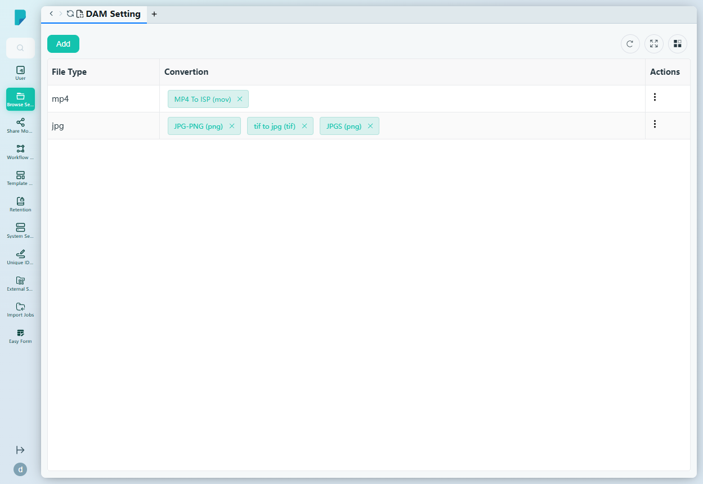
DAM Setting 畫面 此畫面的用途
Digital Asset Management（數碼資產管理）的轉換規則。管理員可為每種媒體檔案類型定義一個或多個具名轉換（標籤 + 目標格式）——例如將上傳的 mp4 轉為 mov，或將 jpg 轉為 png/tif 版本——讓資產自動以後續工作流程所需的格式提供。
工具列與操作
Add — 開啟 Add New DAM 對話框以建立轉換規則。表格工具圖示：Refresh 、Full screen 、Column settings 。
列表與欄位
File Type — 來源副檔名（例如 mp4、jpg）。Convertion ［原文如此］— 為該類型定義的轉換，以可移除的標籤顯示，附標籤及目標格式，例如「MP4 To ISP (mov)」；jpg 有三個：「JPG-PNG (png)」、「tif to jpg (tif)」、「JPGS (png)」。Actions — 每列的 ⋯ 選單，包括 Add （為該檔案類型新增另一個轉換）。
DAM 列操作選單 對話框與面板
Add New DAM
Setup file type 區段：
File Type （必填）— 下拉選單：jpg、tif、mp4、mov、avi、mpeg、png、jpeg。
Convertion 區段：
Label （必填）— 轉換的自由文字名稱。Target Format （必填）— 下拉選單，選項視乎所選的 File Type 而定（例如 png 的選項為 jpeg、tif、jpg）；未選擇 File Type 前為空白。
Submit 儲存規則；關閉（X）按鈕取消。
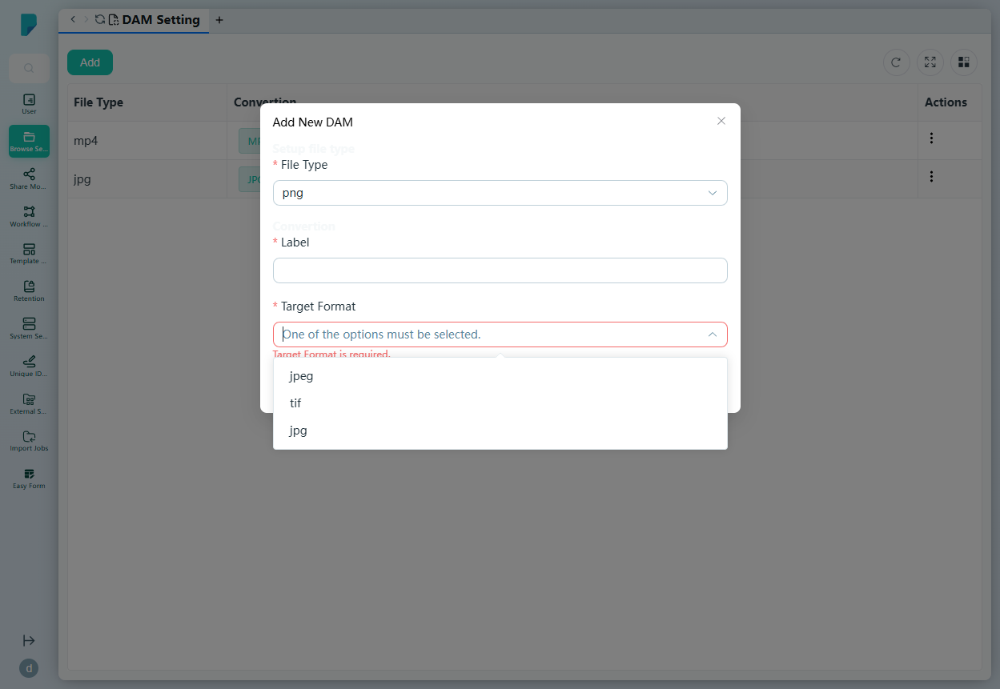
Add New DAM 對話框 誰會使用
負責統一媒體轉換版本的系統管理員及 DAM 管理人員——確保每項上傳的資產都能以預覽、發佈及整合所需的格式產出。
Watermark Setting
Menu path: Admin → Browse Setting → Watermark Setting
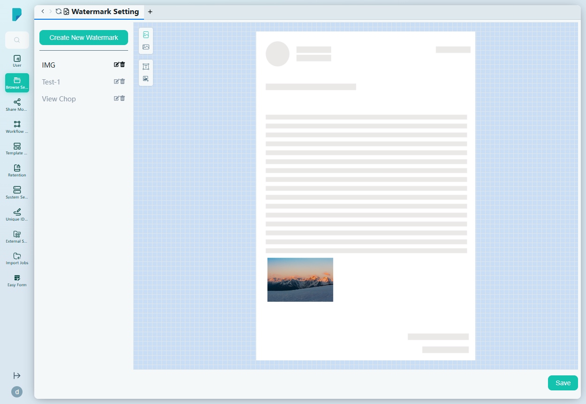
Watermark Setting 畫面 此畫面的用途
水印設計工作室。管理員在此建立具名水印——放置於文件頁面預覽上的文字或圖像元素——儲存後可在系統為文件蓋印的任何位置重複使用（例如檢視、下載或列印時）。此網站上現有三個水印：IMG、Test-1 及 View Chop。
工具列與操作
Create New Watermark — 開啟建立對話框。Watermark list （左面板）— 所有已儲存的水印，每個均附編輯（鉛筆） 及刪除（垃圾桶） 圖示。Save （右下）— 儲存在編輯器中所作的變更。
列表與欄位
此頁沒有表格——版面為列表加編輯器：
左面板 — 具名水印列表；選取其中一個即載入編輯器。編輯器畫布 — 完整的文件頁面預覽（頁首、內文及頁尾佔位符），以格線為背景。所選水印的元素會就地呈現——例如 IMG 水印顯示一個位於頁面左下方的圖像元素。畫布旁設有小型垂直工具列，提供水印元素工具（新增圖像／文字元素），元素可直接在頁面預覽上定位。
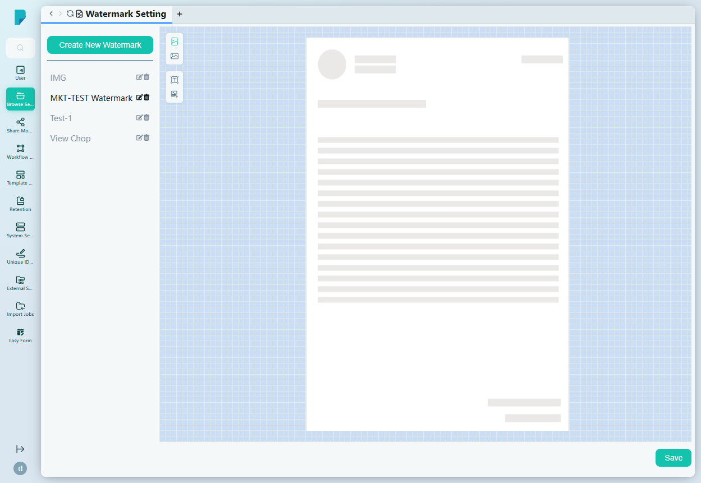
水印編輯器顯示一個新的空白水印 對話框與面板
Create New Watermark
Watermark Name — 新水印的自由文字名稱。Submit 建立水印（會在編輯器中以空白畫布開啟）；關閉（X）按鈕取消。
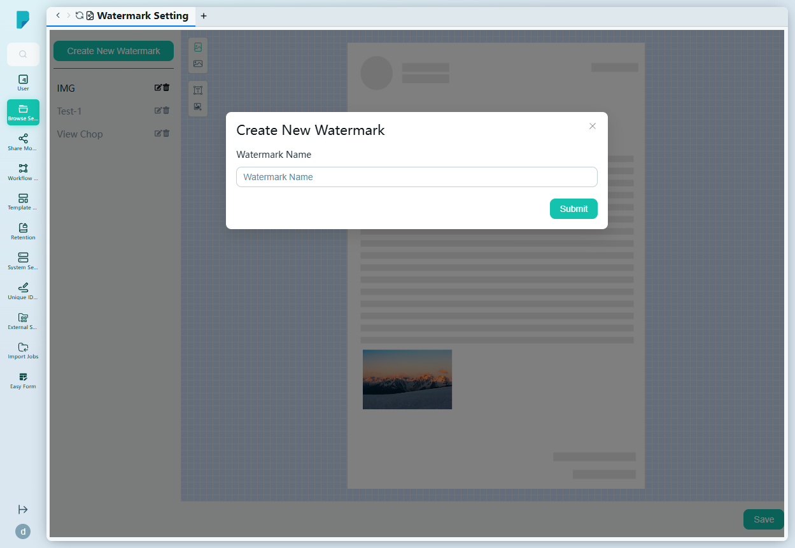
Create New Watermark 對話框 誰會使用
負責設計正式蓋印的系統管理員及檔案管理人員——包括機密聲明文字、公司印鑑、圖像印章等——套用於整個平台的文件。
Home (Browse Home Setting)
Menu path: Admin → Browse Setting → Home
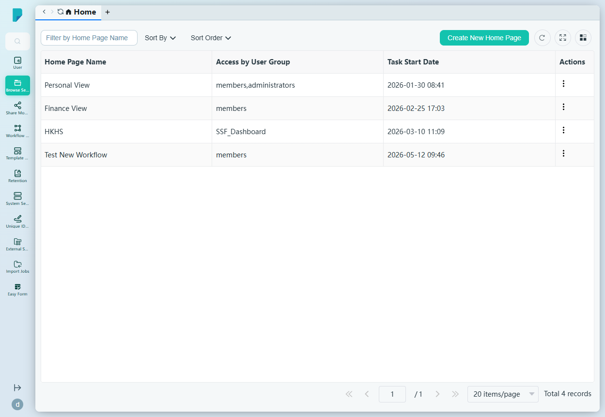
Browse Home Setting 畫面 此畫面的用途
設定客戶端 Browse 首頁檢視。每個「home page」都是為檔案瀏覽器度身訂造的登陸檢視，針對特定用戶群組——例如供所有人使用的 Personal View、供 members 群組使用的 Finance View，或供 SSF_Dashboard 群組使用的 HKHS 儀表板。管理員在此建立、編輯、複製及停用這些檢視。
工具列與操作
Filter by Home Page Name — 自由文字篩選框。Sort By — 核取方塊群組：Access by User Group、Task Start Date、Home Page Name。Sort Order — A–Z 或 Z–A。Create New Home Page — 開啟建立對話框。表格工具圖示：Refresh 、Full screen 、Column settings ，另設顯示總記錄數的分頁頁尾。
列表與欄位
Home Page Name — 檢視的名稱（Personal View、Finance View、HKHS、Test New Workflow）。Access by User Group — 可看到此首頁檢視的群組（例如 members、administrators、SSF_Dashboard）。Task Start Date — 檢視顯示的時間戳（例如 2026-01-30 08:41）。Actions — 每列的 ⋯ 選單，包括：
Edit Home Page Content — 編輯檢視的版面／小工具。Edit Home Page Info — 編輯名稱及群組存取設定。Duplicate — 複製此首頁。Delete Home Page — 將其移除。
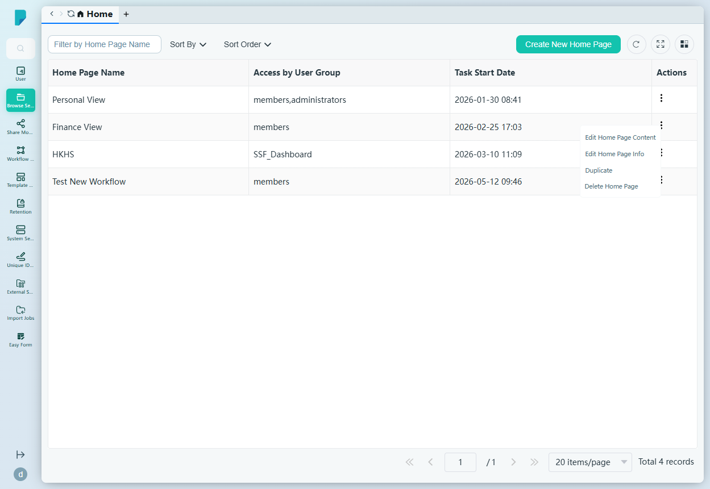
首頁列操作選單 對話框與面板
Create New Home Page
Home Page Name （必填）。Access by User Group — 用戶群組多選欄位，預填「Members Group」（可移除標籤）。Submit 建立首頁；關閉（X）按鈕取消。
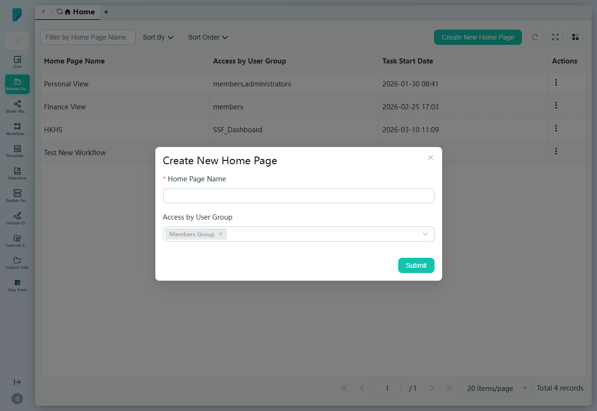
Create New Home Page 對話框 誰會使用
塑造每個團隊首先看到什麼的系統管理員——為每個對象提供切合其文件、儀表板及日常工作的 Browse 首頁。
Internal Sharing
Menu path: Admin → Share Module → Internal Sharing
Internal Sharing 畫面 此畫面的用途
管理員監察網站內所有內部分享的總覽頁——即機構內用戶與其他用戶或群組分享的每個檔案或資料夾。此頁讓管理員在單一位置審核誰分享了什麼、該項目位於何處，以及分享給誰。
工具列與操作
Filter by File / Folder Name — 自由文字篩選框。Sort By — 核取方塊群組：File/Folder Name、Shared By、Shared To、Task Start Date。Sort Order — A–Z 或 Z–A。表格工具圖示：Refresh 、Full screen 、Column settings ，另設顯示總記錄數的分頁頁尾。
列表與欄位
File/Folder Name — 被分享項目的名稱。Shared By — 建立分享的用戶。File / Folder Path — 該項目在儲存庫中的位置。Shared To — 接收的用戶或群組。Task Start Date — 分享開始的時間。
列表目前為空（「No data yet」，0 筆記錄）——此網站上沒有任何內部分享。
對話框與面板
沒有——此頁為唯讀的審核列表；分享本身由終端用戶在客戶端網站上建立。
誰會使用
需要掌握內部資訊分享情況的系統管理員及合規人員——在不接觸用戶內容的情況下，識別過度分享的檔案並審核存取情況。
External Sharing
Menu path: Admin → Share Module → External Sharing
External Sharing 畫面 此畫面的用途
管理員對所有外部分享的監察視圖 —— 即用戶發送到機構以外的檔案。管理員可以在同一個列表中審核誰收到了甚麼、分享了多少檔案,以及每個分享何時到期。
工具列與操作
表格工具圖示:Refresh 、Full screen 、Column settings ,另設分頁頁尾顯示記錄總數。
(此頁沒有篩選列。)
列表與欄位
Recipients —— 分享的外部收件人。No. of Files Shared —— 該分享包含的檔案數量。Create Date —— 分享的建立日期。Due Date —— 分享的到期日期。Actions —— 針對個別分享的行內操作。
此列表目前為空(顯示「No data yet」,0 筆記錄)—— 此站點上沒有任何外部分享。
對話框與面板
無 —— 此頁為唯讀的審核列表;外部分享本身由終端用戶在客戶端網站建立。
誰會使用
系統管理員、合規及保安主任 —— 負責追蹤流出機構的資訊,核實每個外部分享的收件人、數量及到期日。
Workflow Management
Menu path: Admin → Workflow Management → Workflow Management
Workflow Management 畫面 此畫面的用途
運作中工作流程的營運儀表板。管理員可監察全站每個進行中的工作流程任務 —— 誰是負責人、狀態如何、何時開始 —— 並可檢視一個需要跟進的失敗任務專屬佇列。
工具列與操作
Available Task / Fail Task 分頁 —— 在現行任務與失敗任務之間切換。表格工具圖示:Refresh 、Full screen 、Column settings ,另設分頁頁尾顯示記錄總數。
列為唯讀(沒有行內操作);此畫面屬監察視圖。
列表與欄位
Available Task 分頁
Workflow Name —— 工作流程定義(例如 Packing List、teo)。Task Name —— 目前的步驟(例如 Verify Task、New User Task)。Task Owner —— 被指派者(例如 administrator、lyle、ooyy;未能解析的範本負責人會顯示為 ${__system__user_creator_id})。Status —— 任務狀態(assigned、created)。Task Start Date —— 任務開始日期。
此站點有 25 個進行中的任務(共 2 頁)。
Fail Task 分頁
Workflow Name 、Task Name 、Node Type 、Task Failed Date 、Failure Reason 、Actions —— 目前為空(沒有失敗任務)。
Fail Task 分頁 對話框與面板
未見任何對話框 —— 兩個分頁均為唯讀監察列表。
誰會使用
系統管理員及工作流程操作員 —— 負責確保流程順暢運作:及早發現卡住或未指派的任務,並在用戶察覺前處理失敗項目。
Workflow Editor
Menu path: Admin → Workflow Management → Workflow Editor
Workflow Editor 定義列表 此畫面的用途
工作流程設計的中心:列出站點上所有工作流程定義(此處有 41 個),並提供視覺化設計器,用於繪製、設定、發佈及分享流程。每個工作流程都是一個帶版本的定義 —— 草稿可安全編輯,之後再啟用投入運作。
工具列與操作
Create Workflow —— 開啟建立對話框。表格工具圖示:Refresh 、Full screen ,另設分頁頁尾(41 筆記錄,共 3 頁)。
列表與欄位
Workflow Name —— 定義的名稱。Description —— 自由文字描述。Status —— A (已啟用/已發佈)或 D (草稿/已停用)。Create Date —— 建立時間戳。Actions —— 每列的 ⋯ 選單,包括:
Edit Info —— 編輯名稱/描述。Duplicate —— 複製該工作流程。Active —— 啟用/發佈。Remove —— 刪除。workflow_editorPermission [未翻譯的標籤] —— 開啟分享對話框(見下文)。
工作流程行內操作 對話框與面板
Create Workflow
Workflow Name (必填)。Workflow Description —— 可選的自由文字。Submit 建立草稿並在設計器中開啟。
Create Workflow 對話框 視覺化設計器
拖放式畫布(支援平移)。新草稿會以一個 Start Event 節點及一個 End Event 節點開始,在其間建立流程。
左側工具列 —— 頂部為復原/重做/歷史記錄圖示(未有變更前停用),其下是包含 18 種可拖曳節點類型的節點面板 :
User Form、User Signature Task
Condition Task、Transform Task、Validate Task
Sub Process、Upload File
Document Generation Task、Filing Documents Task
Email Task、HTTP Task
Unique Id Generator
Insert Dynamic Database、Batch Insert Dynamic Database、Update Dynamic Database、Batch Update Dynamic Database
Http JSON Edit、Script Task
底部工具列 —— Activate (發佈草稿;會驗證 Start 任務是否已設定表單)及 workflow_editorPermission (分享)。Properties 面板 (右側)—— 顯示所選節點的設定。
工作流程設計器畫布 Workflow permission 對話框
控制誰可以使用/編輯該工作流程:
User/ Role/ Group/ Attribute Set —— 可搜尋的選擇器(「Search and select user, role, group or service」)。Add Permission —— 向所選項目授予存取權。Permission List —— 現有的授權,欄位包括 User/Role/Group/Attribute Set、Permissions、Actions(每項授權可 Delete);觀察到的預設值:Administrators Group(Assigned User Group,預設)及建立者(Users,預設)。Close 按鈕。
Workflow permission 對話框 誰會使用
系統管理員及流程設計人員 —— 負責設計審批及自動化流程,由簡單的簽核到以指令碼及數據驅動的流程,然後發佈並分享給執行這些流程的團隊。
Document Template
Menu path: Admin → Template Management → Document Template
Document Template 畫面 此畫面的用途
文件範本(Word、Excel、PowerPoint)的範本庫,供整個平台產生文件之用 —— 由工作流程的文件產生任務到用戶自行建立文件均會使用。管理員在此上載、編輯、預覽及停用範本;每列會顯示範本的檔案類型圖示。
工具列與操作
Filter by Document Template Name —— 自由文字篩選框。Sort By —— 核取方塊群組:Document Template Creator、Document Template Name、Document Type、Task Start Date。Sort Order —— A–Z 或 Z–A。Create New Document Template —— 開啟建立對話框。表格工具圖示:Refresh 、Full screen 、Column settings ,另設分頁頁尾顯示記錄總數。
列表與欄位
(圖示) —— 檔案類型圖示(Word / Excel / PPT)。Document Template Name —— 範本名稱。Document Type —— Word、Excel 或 PPT。Document Template Creator —— 上載者。Task Start Date —— 建立時間戳。Actions —— 每列的 ⋯ 選單,包括:
Preview Document —— 檢視範本。Replace Document —— 上載新檔案取代原有範本。Edit Document —— 在線上編輯器中開啟範本。Edit Document Template Info —— 編輯名稱/描述。Delete Document —— 刪除。Download Document —— 下載範本檔案。
文件範本行內操作 對話框與面板
Create New Document Template
Document Template Name (必填)。Document Type (必填)—— 下拉選單:Word、Excel、PPT。Description —— 可選的多行文字。Submit 建立範本並在線上編輯器中開啟。
Create New Document Template 對話框 範本編輯器
建立(或編輯)範本會開啟線上文件編輯器,附設 Template Variables 側面板及 Test Template Download 按鈕(以範本產生一份示例文件)。另有一個頁面設定對話框用於設定文件:
Title (必填,已預先填入)。Page Mode —— 下拉選單(PAGE)。Text Counter —— 開關。Page Size —— 下拉選單(A4)。Orientation —— 下拉選單(Portrait)。Page Margin —— Left / Top / Right / Bottom 微調框(各預設為 5)。Save 及 Close 按鈕。
範本頁面設定 誰會使用
系統管理員及範本負責人 —— 負責維護機構的標準信件、表格及試算表,確保每份產生的文件保持品牌一致及內容最新。
Email Content Template
Menu path: Admin → Template Management → Email Content Template
Email Content Template 畫面 此畫面的用途
平台所發出所有電郵的登記冊 —— 工作流程通知、分享邀請、密碼重設、上載請求等(此處有 46 個範本,大部分屬系統所有)。管理員可管理這些電郵的主旨、內文及版面,並可自行新增自訂範本。
工具列與操作
Filter by Email Template Name —— 自由文字篩選框。Sort By —— 核取方塊群組:Email Template Creator、Email Template ID、Email Template Name、Subject。Sort Order —— A–Z 或 Z–A。Email Layout Used —— 按版面篩選(此站點:Jacinto Email Layout)。Edit Email Layout —— 開啟共用電郵版面進行編輯。Create New Email Template —— 開啟建立對話框及編輯器。表格工具圖示:Refresh 、Full screen 、Column settings ,另設分頁頁尾(此處共 3 頁)。
列表與欄位
Email Template Name —— 顯示名稱(例如 New Workflow Notification、forgetPassword、Easy Share)。Subject —— 電郵主旨行,支援佔位符,例如 [(${businessKey})]。Email Template ID —— 觸發該範本的機器鍵值(例如 notification.adhocApproval.submitted、notification.forgetPassword;自訂範本會獲派自動產生的 ID,如 notification.mkt-test.email.template)。Email Layout Used —— 包裹電郵的共用版面(Jacinto Email Layout)。Email Template Creator —— 內建範本顯示為 system,否則為建立者。Actions —— 每列的 ⋯ 選單,包括 Edit Email Template 及 Delete Email Template 。
電郵範本行內操作 對話框與面板
Create New Email Template
Email Template Name (必填)。Subject (必填)—— 電郵的主旨行。Submit 建立範本並開啟編輯器。
Create New Email Template 對話框 電郵範本編輯器
Layout selector —— 選擇電郵版面的下拉選單(Jacinto Email Layout)。Send Test —— 發送測試電郵。Save —— 儲存變更。一個富文本內文編輯器(contenteditable),內文下方顯示標準頁尾(「Copyright © 2008 - 2023 DocPal All Rights Reserved.」)。
電郵範本編輯器 誰會使用
系統管理員 —— 負責掌管平台的對外形象:用戶及外部收件人所收到每封通知電郵的品牌風格、措辭及版面。
Message Template
Menu path: Admin → Template Management → Message Template
Message Template 畫面 此畫面的用途
聊天頻道（WhatsApp、WeChat）訊息範本的註冊表。Email Content Templates 負責電郵內容，而此畫面管理透過即時通訊應用程式發送的範本——包括各頻道的發佈狀態，以及開啟／發送統計數據。
工具列與操作
Sort By — 複選框群組：Created By、Language、Last Modified By、Last Modified Date、Name、Status。Sort Order — A–Z 或 Z–A。New Template — 開啟建立對話框。表格工具圖示：Refresh 、Full screen 、Column settings ，以及附總記錄數的分頁頁尾。
列表與欄位
Name — 範本名稱。Usage — 範本的用途。Language — 範本的語言地區設定（例如 en_US）。Status — 發佈狀態。Created By / Last Modified By — 擁有者及最後編輯者。Last Modified Date — 最後變更時間戳。Actions — 每列的 ⋯ 選單，包括：
View Details — 開啟詳情面板（見下文）。Edit Template — 編輯範本。Duplicate — 複製範本。Delete — 刪除範本。
訊息範本列操作 對話框與面板
New Template
Name — 範本名稱。Submit 建立範本；關閉（X）按鈕取消。
New Template 對話框 範本詳情面板（View Details）
標頭顯示範本名稱、Edit Template 按鈕及選單按鈕。
Stat — 各頻道的使用計數（Message Open/Sent，例如 whatsapp 0/0）。Publish Status — 各頻道的發佈狀態（例如 whatsapp）。頻道列表：Whatsapp 、Wechat 。
訊息範本詳情 誰會使用
管理官方 WhatsApp／WeChat 訊息的系統管理員及客戶互動團隊——追蹤哪些範本已在各頻道發佈，以及其表現如何。
Hold Policy Setting
Menu path: Admin → Retention → Hold Policy Setting
Hold Policy Setting 畫面 此畫面的用途
法律凍結（Legal Hold）管理。Hold Policy 會凍結文件，防止其被刪除或銷毀——可手動或自動套用——直至凍結解除為止。管理員在此建立政策、控制凍結是否自動套用及解除，並啟用或停用每項政策。
工具列與操作
Filter by Hold Policy Name — 自由文字篩選框。Sort By — 複選框群組：Hold Policy Name、Policy Creation Date、Policy Creator、Policy Status。Sort Order — A–Z 或 Z–A。Policy Status — 按 Active / Deactive 篩選。Create New Hold Policy — 開啟建立對話框。表格工具圖示：Refresh 、Full screen 、Column settings ，以及附總記錄數的分頁頁尾。
列表與欄位
Hold Policy Name — 政策名稱（例如 Automatic Test、Approval By (Nine)）。Policy Creator — 建立者。Policy Creation Date — 建立時間戳。Policy Status — Active 或 Deactive（新政策初始為 Deactive）。Actions — 每列的 ⋯ 選單，包括：
Edit Policy — 編輯政策設定。Delete Policy — 刪除政策。Activate Policy — 啟用政策。
Hold Policy 列操作 對話框與面板
Create New Hold Policy
Hold Policy Name （必填）。Approval Setting 區段：
Enable Auto Hold Application — 開關（預設開啟）：凍結自動套用，無需手動審批。Enable Auto Hold Removal — 開關（預設開啟）：凍結自動解除。
Submit 建立政策（狀態為 Deactive，直至啟用）；關閉（X）按鈕取消。
Create New Hold Policy 對話框 誰會使用
負責執行法律凍結的檔案管理人員、合規主任及管理員——確保涉及調查或訴訟的文件不會被銷毀，並以受控、可審計的方式解除凍結。
Retention Policy Setting
Menu path: Admin → Retention → Retention Policy Setting
Retention Policy Setting 畫面 此畫面的用途
檔案保留規則管理。Retention Policy 定義指定類型的文件須保留多久、保留期屆滿後的處理方式（歸檔或刪除），以及可延長保留期的事件。政策初始為 Deactive，啟用後方會生效。
工具列與操作
Filter by Retention Policy Name. — 自由文字篩選框。Sort By — 複選框群組：Approver、Policy Creation Date、Policy Status、Retention Period、Retention Policy Name。Sort Order — A–Z 或 Z–A。Document Type — 按文件類型篩選（沒有政策時顯示 "No Data"）。Active — 按 Active / Deactive 篩選。More — 顯示更多排序／篩選控制項。Create New Retention Policy — 開啟建立對話框。表格工具圖示：Refresh 、Full screen 、Column settings ，以及附總記錄數的分頁頁尾。
列表與欄位
Retention Policy Name — 政策名稱。Document Type — 政策所管轄的類型。Retention Period — 例如 "1 Years"。Policy Creation Date — 建立時間戳。Approver — 審批負責人（如有設定）。Auto Retention — 啟用自動保留時顯示 ✓。Policy Status — Active 或 Deactive（新政策初始為 Deactive）。Actions — 每列的 ⋯ 選單，包括 Edit Policy 、Delete Policy 及 Activate Policy 。
Retention Policy 列操作 對話框與面板
Create New Retention Policy
Retention Policy Name （必填）。Retention Period （必填）+ Period Unit （必填）— 下拉選單：Years、Months、Days。Actions — Archive ⇄ Delete 切換：保留期屆滿時的處置動作。Action Delay Days （必填）— 執行動作前的等候日數，附 "Days Delay" 單位按鈕。Enable Auto Hold Application — 開關（預設開啟）。Retention Trigger Condition — 可重複的列（Add / Remove，可拖曳重新排序）；每列將一個 Document Type （必填，來自 238 種類型的註冊表）與一個 Metadata 日期欄位（必填；選項：create_date、modify_date）配對，保留時鐘即由該日期起計。Retention Event — 可重複的列（Add / Remove，可拖曳重新排序）；每列設有 Event Type （必填 — Retain Now 或 Extend）、Label （必填）及 Extend Retention by （必填，附 "Days" 單位按鈕）——即可延長保留期的事件。Submit 建立政策（Deactive，直至啟用）；關閉（X）按鈕取消。
Create New Retention Policy 對話框 誰會使用
負責執行保留時間表的檔案管理人員及合規主任——確保文件按法規要求保存確切的期限，其後準時歸檔或銷毀，並以合規事件合理地延長保留時鐘。
Access Control List
Menu path: Admin → System Setting → Access Control List
Access Control List 畫面 此畫面的用途
整個文件庫的安全地圖。每個根資料夾——以及其下的每個資料夾和檔案——均以可展開的樹狀結構列出，並顯示其有效的 Read / Write / Manage / Custom 權限授予，讓管理員清楚看到各處誰可以做甚麼，並可深入查看任何項目的詳細權限列表。
工具列與操作
More — 顯示 Sort By 及 Sort Order 控制項。表格工具圖示：Refresh 、Full screen 、Column settings 。
列表與欄位
文件庫的可展開樹狀結構（⌄）——根層例如 Case、Default、Domain、Workspace、default-domain、test-request、workflowHiddenFolder；展開資料夾即可顯示其子資料夾及檔案。
File / Folder Name — 項目名稱。Document Type — 資料夾或檔案。Read — 獲授予讀取權限的用戶／群組（例如 workflowHiddenFolder：Members Group）。Write — 獲授予寫入權限的用戶／群組。Manage — 獲授予管理權限的用戶／群組（例如 Administrators Group、administrator）。Custom — 自訂權限授予。Actions — 每列的 ⋯ 選單，包括 View Details （權限詳情面板）及 toggleExpand （展開／收合樹狀節點）。
ACL 樹狀結構已展開 ACL 列操作 對話框與面板
權限詳情面板（View Details）
顯示所選項目的完整權限列表：
Sort By 、Sort Order 、Add Permission 、Add Attribute Set 及 More 控制項。欄位：User/ Role/ Group/ Attribute Set （被授權者）、Permissions （例如 Custom）、Is inherit （該授予是否繼承而來）、Inherit From （授予來源的上層，例如 /）、Actions 。
權限詳情面板 誰會使用
負責審計及管治整個文件庫存取權限的系統管理員及安全主任——核實權限繼承、發現過於寬鬆的授予，並將權限管理細緻至單一檔案。
External Connection
Menu path: Admin → System Setting → External Connection
External Connection 畫面 此畫面的用途
外部訊息服務的整合中心。在此網站上，它託管 WhatsApp 連接：憑證、連線測試、即時健康監察及錯誤日誌——管理員維持 WhatsApp 訊息範本所依賴的頻道正常運作所需的一切，盡在這裡。
工具列與操作
WhatsApps 區段標頭附 enable switch （目前為開啟）— 開啟或關閉此整合。連接表單：
Access Token — WhatsApp Business API 存取權杖（以憑證欄位形式儲存及顯示）。telephone number — 已連接的電話號碼。Account No. — WhatsApp Business 帳戶號碼。
Test Connection — 向外部服務驗證憑證。Save — 儲存連接設定。
列表與欄位
Status Monitor
連接的即時健康狀況：
Response Time — 最近一次量得的延遲（0.00ms）。Uptime — 可用率百分比（0%）。Status — 目前狀態（此網站上為 Token Error ，即已設定的權杖現時被外部服務拒絕）。
Error Log
連接錯誤的表格，設有 Create Date 、Message 及 Status 欄位（目前為空），附 Refresh 及 Full screen 控制項和分頁頁尾。
對話框與面板
無——本頁為單一設定表單加上監察區段。
誰會使用
負責第三方整合的系統管理員——將 DocPal 連接至 WhatsApp Business、監察其健康狀況，並在用戶察覺之前診斷憑證故障。
Password Policy
Menu path: Admin → System Setting → Password Policy
Password Policy 畫面 此畫面的用途
整個網站的密碼規則。單一表單控制網站上每位用戶的密碼強度要求、首次登入強制執行、到期、帳戶鎖定及密碼重用限制。此網站的目前設定如下所示。
工具列與操作
沒有工具列——本頁為單一政策表單，以開關及數值微調器（spinner）操作（未見明確的 Save 按鈕；各切換開關即為控制項）。
列表與欄位
並非列表——而是政策欄位：
Complexity
Minimum password length — 微調器，8–24（目前：8）。Lower and Uppercase — 必須包含大寫及小寫字母 [a-z][A-Z]（目前：關閉）。Numeric Digits — 必須包含數字 [0-9]（目前：開啟 ）。Special Characters — 必須包含特殊字符 [ !,@,#,$,%,&,* ]（目前：關閉）。
Enforcement
Force First Password Reset — 如密碼不符合政策，首次登入時強制重設密碼（目前：關閉）。Username check — 密碼不得包含用戶名、名字、姓氏，或任何以空格、連字號或底線分隔的名字片段；不區分大小寫（目前：關閉）。Enable Expiration Time — 設定密碼到期時間（目前：關閉）。
Lockout policy（目前：開啟 ）
"How many times can a user try to log in"——附即時提示 "Enter the wrong password 5 times in 5 minutes and the password will be locked for 5 minutes"：
Retry Period (Minutes) — 1–255（目前：5）。Lock Period (Minutes) —（目前：5）。Lock Count — 1–255（目前：5）。
Password reuse（目前：開啟 ）
Enable Password Reuse Restriction — 用戶不得重用近期密碼。Reuse Lock Count — 封鎖多少個先前密碼，1–10（目前：5）。
對話框與面板
無。
誰會使用
制定機構憑證標準的系統管理員及安全主任——在易用性與暴力破解及密碼循環再用風險之間取得平衡。
Audit Log
Menu path: Admin → System Setting → Audit Log
Audit Log 畫面 此畫面的用途
平台的完整活動紀錄（此網站共有 10,160 條紀錄）。每個用戶操作——包括文件下載、資料庫更新等——都會記錄操作者、涉及的對象、來源位置及時間，為管理員及審計人員提供單一的鑑證級資料來源。
工具列與操作
表格工具圖示：Refresh 、Full screen 、Column settings ，另設分頁頁尾（此處共 508 頁——每頁 20 項）。
此頁沒有篩選列或匯出按鈕；紀錄按頁瀏覽，最新者排最前。
列表與欄位
User — 執行操作的帳戶（例如 ooyy）。Category — 所屬功能範疇（例如 File Management、Dynamic DB）。Source Id — 受影響對象的 ID（例如文件或紀錄的 UUID）。Details — 操作的可讀描述，例如「Download original version of document […]」或「Update dataId= [ … ] record in tableId= [ … ]」。IP Address — 用戶端的 IP（例如 [::1]）。Date — 操作的時間戳。
對話框與面板
無——此頁為唯讀的日誌檢視器。
誰會使用
系統管理員、保安團隊及審計人員，用於調查事故、證明合規，以及重組任何文件或紀錄的完整事發經過。
Jobs Status
Menu path: Admin → System Setting → Jobs Status
Jobs Status 畫面 此畫面的用途
背景工作監察器。平台處理的每個檔案相關工作——轉換、傳輸、訊息發送及其他非同步作業——都會列出其目標檔案、類別、目前事件狀態及時間戳，讓管理員監察佇列，並及早發現卡住或失敗的工作。
工具列與操作
Event — 按工作事件／狀態篩選：CREATE、PENDING、COMPLETED、FINISH、ERROR、PENDING_FOR_SENDING_MESSAGE。表格工具圖示：Refresh 、Full screen 、Column settings ，另設顯示總紀錄數的分頁頁尾。
列表與欄位
File Name — 工作所處理的檔案。Path — 檔案在儲存庫中的路徑。Category — 工作的類別。Event — 工作的目前狀態（CREATE / PENDING / COMPLETED / FINISH / ERROR / PENDING_FOR_SENDING_MESSAGE）。Transaction Date — 記錄工作事件的時間。
此列表目前為空（「No data yet」，0 條紀錄）——此網站沒有已排入佇列或已記錄的工作。
對話框與面板
無——此頁為唯讀的監察列表。
誰會使用
系統管理員及營運人員，負責維持平台非同步流水線的健康運作——確認工作順利完成，並在錯誤演變成用戶投訴之前將其截獲。
Unique ID Generator
Menu path: Admin → Unique ID Generator
Unique ID Generator 畫面 此畫面的用途
ID 產生規則的登記冊（此網站共有 53 條）。每條規則透過組合固定文字、日期代碼及遞增序號，產生獨一無二且易讀的識別碼——訂單編號、個案編號、批次 ID 等。規則可供文件類型、工作流程及任何需要受控唯一 ID 的地方使用。
工具列與操作
Filter by Item Name — 自由文字篩選框。Sort By — 複選框群組：Name、Latest Id、Created By、Last Modified By、Last Modified Date。Sort Order — A–Z 或 Z–A。Add — 透過複製現有設定來建立規則（會提示輸入新名稱）。表格工具圖示：Refresh 、Full screen 、Column settings ，另設分頁頁尾（此處共 3 頁）。
列表與欄位
Name — 規則名稱（例如 ORDER CASE、system-worthy）。Latest Id — 最近簽發的 ID（例如 ORD-202604-00010、${yyyy-MM-dd-HH-mm}_010015、BatchID_010000）。Created By / Last Modified By — 建立及修改者。Last Modified Date — 最後修改時間戳。Actions — 每列的 ⋯ 選單，提供 Edit （開啟規則編輯器）、Duplicate （以新名稱複製規則）及 Delete 。
MKT-TEST ID 規則已建立 對話框與面板
Rule editor (Edit)
Id Generator Name （必填）。Prefix （必填）— 以可移除標籤形式顯示的有序代碼列表，例如 ORD-、{date(yyyy)}、{date(MM)}、-；Date 及 Variable 按鈕可分別插入日期格式代碼及變數，兩者之間亦可直接輸入自由文字。Suffix — 可選的結尾文字，同樣設有 Date / Variable 代碼按鈕。Id digit （必填）— 序號位數（例如 5 → 00010）。Starting Number （必填）— 序號的起始值（例如 1）。Save 儲存規則。Example 區塊 — 一個 Id 預覽欄位及一個 Generate 按鈕，可在不實際簽發的情況下預覽下一個 ID（例如按上述格式產生 ORD-202607-00001）。
ID 規則編輯器 誰會使用
系統管理員，負責統一全機構的編號方式——讓每個個案、訂單及批次都擁有可預測、可審計、不會重複的識別碼。
External Storage
Menu path: Admin → External Storage
External Storage 畫面 此畫面的用途
外部儲存連線的登記冊——即網絡共享（SMB），文件檔案可存放於主要儲存庫以外的位置。管理員可在此新增連線、保管其登入憑證，並將每個連線切換為 Active 或 Deactive，以控制檔案是否流向該連線。
工具列與操作
Filter By Name — 自由文字篩選框。Sort By — 複選框群組：Name、Create Date、Status、Last Modified Date。Sort Order — A–Z 或 Z–A。Add New — 開啟連線對話框。表格工具圖示：Refresh 、Full screen 、Column settings ，另設顯示總紀錄數的分頁頁尾。
列表與欄位
Name — 連線名稱（Test1、Test）。Connection Type — 目前兩列均為 SMB。Path — 共享路徑。Host — 伺服器地址。Status — Active 或 Deactive。Creator — 連線的建立者。Create Date / Last Modified Date — 時間戳。Actions — 每列的 ⋯ 選單，提供 Edit Connection 、Edit Detail 及 Active （啟用連線）。
External Storage 列操作 對話框與面板
Add New
Name （必填）。Connection Type （必填）— 下拉選單；此網站為 SMB。Platform （必填）— 下拉選單：WINDOW、LINIX [sic]。Work Group （必填）— SMB 工作群組。Path （必填）— 共享路徑。Credential 區塊 — host （必填）、Username （必填）、Password （必填）、Shared Secret （可選）、Port （必填，預設遮罩顯示）。Status — Active 開關（預設開啟）。Submit 建立連線；關閉（X）按鈕則取消。
Add New 儲存對話框 誰會使用
系統管理員及基礎架構負責人，將 DocPal 的儲存延伸至企業檔案伺服器——擴充容量之餘，亦讓檔案保留在機構自行掌控的基礎架構之上。
Import Jobs
Menu path: Admin → Import Jobs
Import Jobs 畫面 此畫面的用途
批量匯入及處理工作的監察器。來自受監察網絡來源的檔案會按批次處理（例如 OCR Processing）；此畫面顯示每個批次、其來源、在佇列中的位置，以及完成或失敗的狀態。
工具列與操作
Filter By Name — 自由文字篩選框。Sort By — 複選框群組：Profile Name、Create Date、Status。Sort Order — A–Z 或 Z–A。表格工具圖示：Refresh 、Full screen 、Column settings ，另設顯示總紀錄數的分頁頁尾。
沒有新增按鈕——工作源自已設定的匯入來源，而非從此畫面建立。
列表與欄位
Batch Id — 工作的批次識別碼（例如 Batch00011754）。Profile Name — 處理設定檔（例如 OCR Processing）。File Name — 已匯入的檔案（例如 test ocr.docx）。Status — completed 或 failed。Queue Order — 工作在處理佇列中的位置。Source — 檔案的來源網絡路徑（例如 \\132.148.160.53\Docpaltest\processing\Batch00011754）。Create Date — 工作的建立時間。Actions — 每列的 ⋯ 選單，提供 Edit 。
Import Job 列操作 對話框與面板
除每列的 Edit 操作外，未見其他對話框或面板。
誰會使用
系統管理員及營運人員，負責監察匯入流水線——確認批次依序處理，並截獲失敗的匯入以便重新處理。
Easy Form
Menu path: Admin → Easy Form
Easy Form 畫面 此畫面的用途
Easy Form 的登記冊——可設計、發佈並連結至工作流程的輕量級資料擷取表格（列表設有「Linked with Workflow」欄）。管理員在此建立表格，並管理其狀態及工作流程關聯。
工具列與操作
Filter by Form Name — 自由文字篩選框。Sort By — 複選框群組：Create Date、Form Name、Status、Last Modified Date。Sort Order — A–Z 或 Z–A。Create New Form — 開啟建立對話框。表格工具圖示：Refresh 、Full screen 、Column settings ，另設顯示總紀錄數的分頁頁尾。
列表與欄位
（選取複選框） — 列選取。Form Name — 表格名稱。Create Date / Last Modified Date — 時間戳。Status — 表格的發佈狀態。Linked with Workflow — 表格所連結的工作流程。Actions — 每列的操作選單。
對話框與面板
Create New Form
Form Name （必填）。Submit 建立表格；關閉（X）按鈕則取消。
Create New Form 對話框 此網站觀察到的已知問題（2026-07-31）
表格列表 API 故障：POST /admin/api/dms/easy-form/page 回傳 HTTP 500，內容為 {"code":700,"data":null,"message":null,"result":false}，因此即使已有表格存在，列表仍一律顯示「No data yet」。表格建立本身正常——建立測試表格時 POST /admin/api/dms/easy-form 回傳 200——但之後列表無法載入（同樣回傳 500），與已知的用戶端 Easy Form 故障情況一致。
Easy Form 列表 500 錯誤 誰會使用
系統管理員及流程負責人，用於建立快速資料擷取表格並將其接入工作流程。